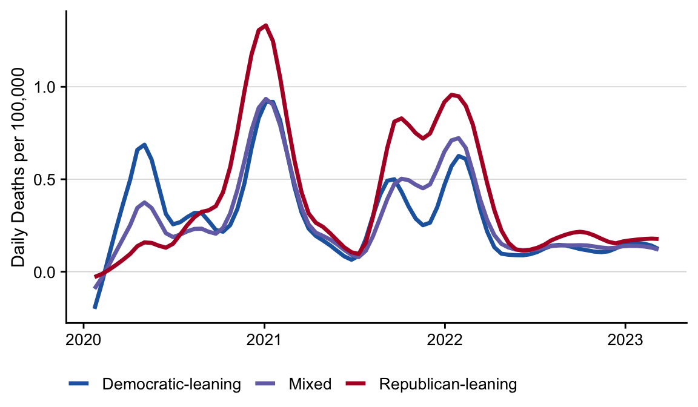
Partisan Differences in Health Behaviors During the COVID-19 Pandemic
Abstract
COVID-19 mortality diverged along partisan lines, yet whether individual partisans genuinely differed in health behavior or whether gaps reflect policy environments and geographic sorting remains contested. Existing work documents partisan attitudinal differences but cannot distinguish the independent role of partisan identity from contextual confounds. Using data from the Berkeley Interpersonal Contact Study, a nationally representative survey of 18,233 respondents across six waves (April 2020-May 2021), this study tests competing explanations for partisan gaps in daily social contacts and mask-wearing. Partisan differences persist within shared policy environments, across regions, and after demographic adjustment – a pattern we term “portable polarization.” Objective severity temporarily compresses contact gaps but leaves mask polarization untouched, and stated concern fails to account for behavioral differences, suggesting that expressed attitudes on politicized health topics may not reliably predict protective behavior. Partisan identity operates as an independent driver of health behavior, not reducible to information, policy, or place.
Keywords
COVID-19, political polarization, health behaviors, partisanship, public health
The COVID-19 pandemic revealed a striking pattern in American public health: mortality rates diverged sharply along partisan lines. Counties that voted heavily for Donald Trump in 2020 experienced substantially higher COVID-19 death rates than those that supported Joe Biden (Gollwitzer et al. 2020; Wallace, Goldsmith-Pinkham, and Schwartz 2023). This partisan mortality divide was not a statistical artifact — it emerged during the pandemic and widened over time, particularly after vaccines became available (Wallace et al. 2023). Early in the pandemic, mortality was higher in Democratic-leaning counties, reflecting the initial concentration of cases in urban areas like New York City; but by fall 2020, this pattern reversed, and Republican-leaning counties experienced persistently higher mortality through the remainder of the pandemic (Figure 1).
These aggregate patterns raise the possibility that individual partisans differed in their behavioral responses to the pandemic. But county-level data alone cannot tell us whether such individual-level differences exist, how large they are, or whether they persist once we account for the many other ways that Republican- and Democratic-leaning places differ. Survey research has documented substantial partisan gaps in pandemic-related attitudes — with Republicans expressing less concern about the virus and lower support for mitigation measures (Gadarian, Goodman, and Pepinsky 2021) — and some studies have linked these attitudinal differences to downstream health consequences, finding that political orientation predicted self-rated health and well-being even after accounting for local pandemic severity (Coleman and Andersson 2024). Yet this literature leaves critical questions unanswered: attitudinal studies capture what partisans say but not necessarily what they do, and analyses that link partisanship to health outcomes cannot isolate whether behavioral divergence or geographic sorting drives the association. Before we can explain why partisan identity shapes health behavior, we must first establish whether it does so robustly — independent of policy, place, and demography — and under what conditions partisan identity matters most.
This paper uses data from the Berkeley Interpersonal Contact Study (BICS), a nationally representative survey that collected detailed counts of daily interpersonal contacts and mask usage during the COVID-19 pandemic, to adjudicate between competing explanations for partisan health gaps. Rather than testing a single mechanism, we exploit variation across policy environments, demographic composition, geographic context, perceived severity, and pandemic conditions to ask: which theories survive contact with the empirical patterns? If partisan differences are artifacts of policy or place, they should dissolve within comparable environments; if they reflect demographic sorting, they should close after controlling for covariates; if information and perception fully drive behavior, they should disappear among partisans who assess risk similarly; and if objective severity overrides identity, they should narrow when mortality is highest.
Our findings reveal that partisan differences in health behaviors are remarkably robust. Gaps in social contacts and mask-wearing persist within policy environments, across regions, in both urban and rural areas, and across diverse local partisan compositions — a pattern we term “portable polarization.” At the same time, the magnitude of polarization varies in theoretically revealing ways: objective severity temporarily compresses contact gaps but leaves mask-wearing polarization untouched, and stated concern fails to account for behavioral differences, suggesting that expressed attitudes on politicized health topics may function as markers of group allegiance rather than guides to behavior. These findings advance sociological understanding of how partisan identity — increasingly a master status in American life — shapes health behavior through channels that operate independently of information, policy, and place.
1 Background
1.1 Partisan Differences in Health Behavior
A growing literature documents partisan differences in health-related attitudes and behaviors during the COVID-19 pandemic. In one of the earliest and most influential studies, Gadarian et al. (2021) showed that partisan identity predicted attitudes toward social distancing, mask-wearing, and government intervention even after controlling for demographics, local case rates, and media consumption — suggesting that party identification operated as more than a proxy for other characteristics (see also Allcott et al. 2020; Clinton et al. 2021; Grossman et al. 2020). These attitudinal differences appeared to have real consequences: county-level analyses linked Republican vote share to higher COVID-19 case and death rates, particularly after the initial wave (Gollwitzer et al. 2020; Krieger et al. 2022; Neelon et al. 2021), and Coleman and Andersson (2024) found that political orientation predicted individual self-rated health and well-being during the pandemic even after accounting for local severity. However, most of this work relies on aggregate data or attitudinal measures rather than direct assessments of individual behavior, leaving open the question of whether individual partisans actually behaved differently or whether observed patterns reflect the demographic and geographic sorting of partisans into different environments.
Studies that do examine individual behavior generally confirm partisan differences, but with important limitations. Milosh et al. (2021) found that mask adoption was 12 percentage points lower in Republican-leaning counties even after accounting for local case rates, and Kaushal et al. (2022) documented persistent partisan gaps in social distancing that widened over time (see also Pink et al. 2021). County-level GPS data told a similar story: Allcott et al. (2020) found that Republicans engaged in significantly less social distancing even after controlling for local disease severity (see also Gollwitzer et al. 2020). Clinton et al. (2021), using over one million individual survey responses, found that partisan differences in social activity were initially small but widened substantially over time — with Republicans increasing social activities by 75% compared to 47% for Democrats — and that these gaps far exceeded differences between the most and least severely affected communities. Yet even these studies leave key questions unresolved: the county-level analyses cannot separate individual identity from place-level confounds, and the individual-level survey work, while documenting the temporal arc, did not systematically test whether partisan gaps survive within shared policy, geographic, and demographic contexts. A Democrat in San Francisco and a Republican in rural Alabama differ not only in party identification but in the mandates they face, the norms that surround them, and the information they receive. Existing work has not systematically tested whether partisan behavioral gaps survive within shared contexts.
This study builds on this body of work by moving from aggregate patterns and attitudinal measures to individual-level behavioral data — actual counts of daily contacts and mask usage during specific interactions. Crucially, the design of our data allows us to test whether partisan differences persist within comparable policy, geographic, and demographic contexts — the comparison that existing work has largely been unable to make. By holding context constant and asking whether partisan gaps survive, we can begin to distinguish identity-driven behavioral divergence from the confounding effects of place.
1.3 Competing Explanations for Partisan Health Gaps
We organize our analysis around a set of competing theoretical explanations for partisan behavioral gaps, each of which generates testable predictions about when and where gaps should appear or disappear. This approach — using patterns of contextual variation to adjudicate between theories — allows us to constrain the set of plausible explanations even though we cannot directly test causal mechanisms. The framework yields two core insights: (1) each theory implies that partisan gaps should narrow or vanish under specific conditions, so persistent gaps under those conditions constitute evidence against that theory; and (2) if gaps persist across all conditions where alternative theories predict they should disappear, the surviving explanation is that partisan identity itself drives behavior.
The most straightforward alternative explanations emphasize policy environments and demographic composition. Democrats were concentrated in urban areas governed by officials who implemented stricter lockdowns, mask mandates, and business closures; Republicans lived in areas with fewer restrictions. If partisan gaps are artifacts of these policy differences, they should disappear when we compare partisans within the same policy regime — within strict mandate areas, within lenient areas, and within areas with no mandates. Similarly, if gaps reflect the fact that Democrats and Republicans differ in age, education, urbanicity, and other characteristics associated with health behavior, controlling for these demographics should eliminate the gaps.
A deeper challenge comes from explanations rooted in local context and social conformity. Research has documented powerful contextual effects on health outcomes — for example, Montez et al. (2025) showed that county-level characteristics such as economic conditions, healthcare infrastructure, and social capital predicted mortality rates, and that some of these contextual associations shifted during the pandemic. If behavior is primarily shaped by such local conditions and norms rather than individual identity, partisans in the same environment should behave similarly — a Democrat in a Republican-majority area should be nearly indistinguishable from her Republican neighbors. Baxter-King et al. (2022) provide the most direct test of this prediction for mask-wearing, finding that Republicans were less likely to wear masks as the Republican share of their zip code increased, while Democratic mask-wearing was unaffected by local partisan context — suggesting that contextual effects on visible health behaviors may operate asymmetrically across partisan groups. This “context dominates” prediction can be tested across multiple dimensions: partisan composition, urbanicity, region, and policy environment. If partisan gaps persist across all of these contextual comparisons, it would provide strong evidence that identity drives behavior independent of local culture, what we term “portable polarization”: the idea that partisans carry their behavioral patterns with them regardless of where they live or what surrounds them. Importantly, portable polarization does not require that gaps are identical in every context; it requires only that they persist. Context may shift absolute levels of behavior for all groups without closing the partisan divide, and variation in gap magnitude across contexts is itself analytically informative, potentially revealing which groups are more responsive to local conditions and which are more anchored to nationally circulated partisan cues.
An alternative within-person explanation emphasizes information and risk perception: Republicans and Democrats may have been exposed to different information through divergent media ecosystems and elite messaging (Baum 2011; Graf and Aday 2008), leading to different assessments of pandemic severity that in turn produced different behaviors. Work in this journal supports the plausibility of this pathway: Hawks (2025) showed that perceived legitimacy of public health authorities and shared health values predicted compliance with COVID-19 directives, suggesting that the informational and cultural context through which partisans evaluate health guidance may shape behavioral responses. If this account is correct, partisan gaps should substantially close among partisans who report the same level of concern. However, if stated perceptions are themselves expressions of partisan identity — if partisans report what their group is “supposed” to believe rather than what actually guides their behavior — then perceptions may fail to account for behavioral differences. A related question concerns whether objective pandemic severity can override partisan divergence: if polarization thrives when threats are abstract but narrows when consequences become concrete and personal, gaps should be smaller during high-mortality periods and larger when the threat is distant.
Taken together, these competing explanations define a logical space within which our empirical analysis operates. The question is not whether partisanship correlates with behavior — prior work establishes that it does — but whether that correlation reflects the independent force of partisan identity or can be reduced to policy, place, demographics, information, or objective conditions. The identity account generates a distinctive prediction that separates it from all contextual alternatives: if partisan identity shapes health behavior through the mechanisms described above — group conformity, symbolic boundary maintenance, and responsiveness to nationally circulated elite cues — then its behavioral effects should be portable, traveling with individuals regardless of local context, because the sources of partisan influence (national media, party leaders, co-partisan social networks) are not geographically bounded in the way that policy environments, local norms, and demographic compositions are. If gaps persist after each alternative explanation has been given its best chance to account for them — within shared policy regimes, across regions, in both urban and rural settings, and regardless of local partisan composition — the surviving interpretation is that partisan identity has become a fundamental driver of health behavior, one whose influence operates through channels that transcend place.
1.4 The Current Study
Drawing on the competing-theories framework outlined above, we examine two primary research questions. First, are partisan differences in health behaviors — social contacts, mask-wearing, and vaccine acceptance — robust to policy environment, geographic context, and demographic composition? Second, under what conditions are partisan gaps in health behavior largest versus smallest? We test each competing explanation by examining whether partisan gaps narrow where that theory predicts they should: within shared policy environments, after demographic adjustment, among partisans with similar risk perceptions, during high-severity periods, and across diverse geographic contexts.
We expect the magnitude of partisan gaps to vary across behaviors and conditions. Behaviors that are visible and low-cost — such as mask-wearing — may be more susceptible to partisan signaling than behaviors that are private and high-stakes — such as reducing social contacts during a mortality surge. Similarly, gaps may narrow when the pandemic’s toll is most visible and immediate, as concrete consequences constrain the space for motivated reasoning. These predictions allow us to test not only whether identity matters but how it operates differently across behavioral domains and temporal contexts.
We use data from the Berkeley Interpersonal Contact Study (BICS), a nationally representative survey that collected actual counts of daily interpersonal contacts and detailed mask usage during specific interactions across six waves from April 2020 to May 2021. These behavioral measures — concrete counts rather than abstract self-assessments — provide a more direct window into the behaviors most relevant to disease transmission. Our contribution is primarily descriptive: we do not claim to identify causal mechanisms, but we use the pattern of results across multiple contextual comparisons to constrain the set of plausible explanations for partisan behavioral divergence.
2 Data and Methods
2.1 Data
We use data from the Berkeley Interpersonal Contact Study (BICS), a nationally representative survey that collected detailed information on social contact patterns, protective behaviors, and demographic characteristics during the COVID-19 pandemic in the United States. BICS recruited respondents from an online panel and used weighting methods to generate nationally representative estimates. Respondents were asked how many people they had face-to-face contact with on the day before the survey interview, and detailed information was collected on up to three of these contacts, including each contact’s age, sex, race/ethnicity, mask usage, and physical distance. We analyze waves 1 through 6, spanning April 2020 to May 2021 (N = 18,233). Wave 0 is omitted because it did not record political affiliation in a comparable way. Additional details on survey methodology, questionnaire design, sampling, and weighting are described in Feehan and Mahmud (2021).
| Characteristic | Republican | Independent | Democrat |
|---|---|---|---|
| N | 5,517 | 4,527 | 8,189 |
| Mean age (years) | 50.0 | 46.4 | 46.3 |
| Male (%) | 51.5 | 50.1 | 46.3 |
| White (%) | 89.6 | 78.4 | 69.7 |
| College graduate (%) | 32.0 | 29.4 | 37.1 |
| Metropolitan (%) | 82.5 | 85.4 | 87.8 |
| Employed (%) | 58.6 | 55.1 | 59.8 |
| Household size | 2.91 | 2.88 | 2.87 |
The three partisan groups differed on several demographic characteristics (Table 1). Republicans were older on average and more likely to be male. The most striking demographic difference was in racial composition: 85% of Republicans identified as white, compared to 71% of Independents and 60% of Democrats. Democrats were more likely to live in metropolitan areas and to hold a college degree. Our analytic sample overrepresents Democrats (44.9%) relative to national estimates of party identification during the study period — 30% Democrat, 29% Republican, and 39% Independent (Gallup 2021) — while underrepresenting Independents (24.8% vs. 39%). Republicans are represented at roughly their national share (30.3% vs. 29%).
Survey weights are applied throughout to improve representativeness. These weights adjust for age, gender, race/ethnicity, and education, and we additionally rake on party identification to match national targets. Because partisanship is highly correlated with these demographic characteristics, the party-adjusted weights produce estimates nearly identical to the original demographic weights for within-party comparisons (see Section 6.8).
Political party identification was assessed by the panel provider prior to the survey. Upon enrollment in the panel, respondents selected their partisan affiliation from standard categories (Democrat, Republican, Independent, or Prefer not to Say/Other). We exclude respondents in the “Prefer not to Say/Other” category to prevent potential misclassification bias. Because party identification was collected independently of our survey instrument and before the pandemic began for most respondents, it is not subject to priming effects from our health behavior questions. Party identification is among the most stable of political attitudes, typically formed in early adulthood and maintained across the life course (Green 2002), making it unlikely that respondents’ partisan identification changed meaningfully between the panel provider’s measurement and our survey.
Several features of the data warrant consideration. The sample is drawn from an online panel, which may underrepresent populations with limited internet access. Self-reported behavioral measures are subject to social desirability bias and recall error, though the specificity of our measures — actual contact counts for the previous day, mask usage during specific interactions — reduces the scope for such bias relative to abstract attitudinal items. Our assessment of vaccine acceptance is limited to a single wave (May 2021), early in the rollout when eligibility and supply varied across jurisdictions.
2.2 Measures
2.2.1 Dependent Variables
We examine two primary health behaviors measured across all six survey waves, plus vaccination assessed in a single wave.
Social Contacts. Our primary contact measure is the total number of face-to-face contacts respondents reported for the day prior to the survey interview. BICS defined a contact as any in-person interaction involving either physical touch or a conversation of at least a few words. We also examine non-household contacts as a supplementary measure that isolates discretionary social exposure outside the home.
Mask-Wearing. Mask usage is derived from the contact-level alter roster. For each of up to three non-household contacts, respondents indicated whether a face mask was worn during the interaction. We aggregate these reports to construct a respondent-level measure equal to the percentage of non-household contacts during which the respondent wore a mask (0-100 scale). This measure captures actual masking behavior during specific interactions rather than general attitudes toward masks.
Vaccination. Vaccine acceptance, measured in Wave 6 (May 2021) only, is a binary indicator equal to one if the respondent was already vaccinated or stated an intention to vaccinate. Because it was assessed in a single wave, vaccine acceptance is reported descriptively but is not examined in the temporal or contextual analyses; partisan differences are reported in Section 6.1.
2.2.2 Key Independent Variable
Party identification is our primary independent variable. Respondents were classified as Democrats, Republicans, or Independents based on their self-reported affiliation, collected by the panel provider prior to our survey. Democrats serve as the reference category in all regression models.
2.2.3 Control Variables
Local pandemic severity — measured as lagged county-level COVID-19 incidence and mortality rates — is the most theoretically consequential control, as it captures the objective risk environment to which partisans may differentially respond. We link individual survey responses to geographic data at the ZIP code and congressional district levels to characterize local partisan composition (2020 U.S. House election vote share) and policy environment (county-level mask mandate status, classified as strict, less strict, unspecified, or no mandate). Additional demographic controls include age, gender, race/ethnicity, education, income, and urban/rural residence. These variables are included to test whether partisan gaps reflect demographic sorting rather than the independent effect of identity (see Section 6.7 for detailed results).
2.3 Analytical Strategy
The analysis proceeds in three stages. First, we establish partisan differences in health behaviors and test whether they survive demographic controls. Second, we examine whether risk perception and objective pandemic severity can account for the gaps. Third, we test whether gaps persist across geographic, policy, and partisan contexts — the central test of “portable polarization.”
Our empirical strategy is organized around the competing theoretical explanations outlined in the Background. Each explanation predicts that partisan gaps should narrow or disappear under specific conditions; we test each by examining whether gaps persist where that theory predicts they should not. This pattern-based approach allows us to constrain the set of plausible explanations even though we cannot directly identify causal mechanisms with observational data.
To examine whether partisans differentially respond to changes in pandemic severity, we estimate models interacting party identification with lagged local conditions:
\[ Y_{ict} = \beta_1 \text{Party}_i + \beta_2 \log(\text{Incidence}_{c,t-1}) + \beta_3 (\text{Party}_i \times \log(\text{Incidence}_{c,t-1})) + \gamma_c + \mathbf{X}_i'\delta + \epsilon_{ict} \]
where \(Y_{ict}\) is the outcome for individual \(i\) in county \(c\) at time \(t\), \(\text{Party}_i\) indicates partisan affiliation (Democrats as reference), \(\log(\text{Incidence}_{c,t-1})\) is the log-transformed county-level incidence rate during the week prior to the survey, \(\gamma_c\) represents county fixed effects, and \(\mathbf{X}_i\) includes individual-level controls. We estimate parallel models substituting mortality for incidence. Both predictors are standardized (z-score) to facilitate comparison.
For the first research question, we estimate weighted means and regression-adjusted comparisons of health behaviors by party, controlling for demographics. We then stratify by concern level to test the information/perception explanation: if partisan gaps disappear among respondents reporting the same level of concern, the perception account is sufficient; if gaps persist, identity operates through channels beyond information processing.
For the second research question, the county fixed effects specification above tests whether partisan gaps narrow when objective severity rises. By absorbing all time-invariant county characteristics — local political culture, healthcare infrastructure, population density — the model isolates within-county temporal variation, asking: as conditions change within the same county, do partisans adjust their behavior differently? We complement this with regional comparisons using estimated marginal means (emmeans) adjusted for survey wave and local mortality, and with stratification by policy environment and local partisan context.
We assess robustness through weight sensitivity analyses comparing results under demographic-only versus party-raked weights (Section 6.8), and supplementary analyses of partisans living in opposing-party congressional districts (Section 6.7.2).
3 Results
We structure our results as a series of tests designed to adjudicate between the competing theoretical explanations outlined above. We first establish that partisan differences in health behaviors are substantial and survive demographic controls. We then test whether gaps in risk perception can account for behavioral differences, whether objective pandemic severity overrides partisan identity when the stakes are highest, and whether geographic context, policy environments, or local partisan composition can explain the gaps. Each test confronts a specific theory with the empirical patterns; the explanation that survives all tests is the one we retain.
We find substantial partisan differences across all three health behaviors examined (Figure 2). Republicans reported 6.6 total daily contacts compared to 5.3 for Democrats (a gap of 1.2 contacts per day), wore masks during just 54.8% of contacts compared to 65.6% for Democrats (a gap of 11 percentage points), and showed lower vaccine acceptance (34.8% vs. 41.1%; see Section 6.1). These differences persisted after controlling for age, gender, race, education, and urban/rural residence, eliminating the possibility that partisan gaps are artifacts of demographic sorting — the first competing explanation. The partisan gap in mask-wearing was larger than differences observed across other demographic categories including race, gender, and education. Importantly, these gaps are not driven by respondents with minimal out-of-household activity: restricting the sample to those reporting two or more non-household contacts yields comparable partisan differences in both contacts and mask usage (see Section 6.13.1). Because vaccination was assessed only in Wave 6 and cannot be examined longitudinally, the analyses that follow focus on contacts and mask-wearing.
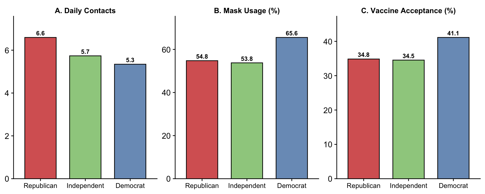
Underlying these behavioral differences were substantial partisan gaps in pandemic risk perception (see Section 6.2): 63% of Democrats reported being “very concerned” about COVID-19 compared to 39% of Republicans — a 23 percentage point gap documented extensively in prior work (Gadarian et al. 2021; Kaushal et al. 2022; Milosh et al. 2021). If these perception differences fully account for the behavioral gaps, then partisans who express the same level of concern should behave similarly. Figure 3 tests this directly by comparing the Republican-Democrat gap within each level of stated concern (see Section 6.2 for levels by party). For social contacts, the partisan gap persists at every level: among the very concerned, Republicans still reported 5.6 daily contacts compared to 5.0 for Democrats, a gap of 0.6 contacts. For mask usage, perceived severity does mitigate polarization: the gap narrows as concern increases, and among the “very concerned,” Republicans and Democrats report nearly identical mask usage (72% vs. 72%).
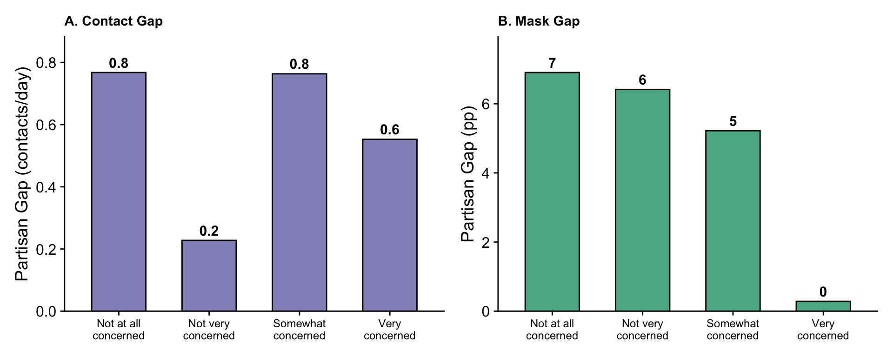
Interaction models formally confirm these patterns (see Section 6.4). For contacts, the Republican x Very Concerned interaction is statistically significant and negative (\(\beta\) = -1.01, p = 0.03), indicating that concern modestly narrows the partisan contact gap — but does not close it. For masks, the interaction is large and significant (\(\beta\) = 12.2, p < 0.001). The mechanism is clear: among the very concerned, Republicans wore masks during 72% of contacts, nearly identical to Democrats (72%). But this convergence reflects Republicans responding more sharply to concern: Republicans increased mask usage by 43 percentage points from “not at all concerned” to “very concerned,” compared to 36 points for Democrats. In sum, perceived severity mitigates partisan polarization for both behaviors, though the effect is substantially larger for mask usage than for social contacts. These results weigh against the information and perception explanation as a complete account: if partisan behavioral differences were simply downstream of different risk perceptions, they should disappear among partisans who express the same level of concern. They do not — particularly for contacts, where the gap persists at every concern level. Perception matters, but it is insufficient on its own to explain partisan behavioral divergence.
These aggregate gaps were not constant over time. Figure 4 tracks partisan gaps across survey waves alongside local mortality rates. The contact gap was smallest during high-mortality periods — early in the pandemic and during the winter 2020-21 surge (gaps of 0.3-0.7 contacts) — and largest when mortality was low (3.5 contacts in September 2020). Regression models confirm that Republicans were more responsive to mortality than Democrats, reducing contacts more sharply when deaths rose (see Section 6.11 for detailed coefficients). The mask gap, by contrast, grew steadily from 6 to 15 percentage points regardless of mortality, showing no convergence during the winter surge.
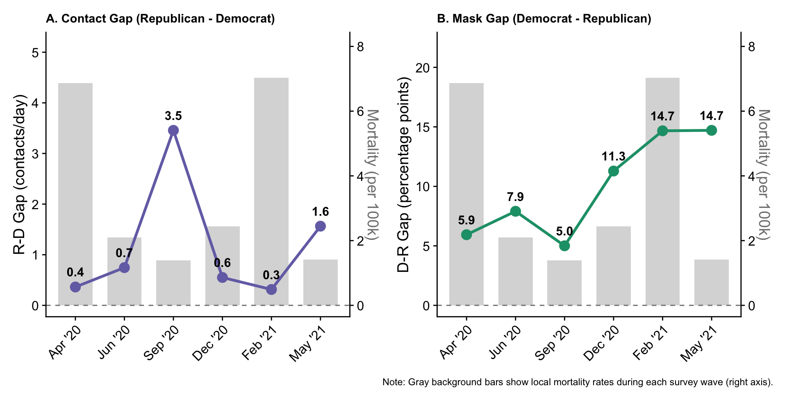
This divergence between contacts and masks offers a partial verdict on the “objective severity overrides identity” explanation. Objective severity can temporarily compress partisan gaps for contacts — a private, high-stakes behavior where the personal consequences of not reducing exposure are immediate and concrete — but it does not override identity for mask-wearing, a visible, low-cost behavior that had become an entrenched marker of partisan identity. The most telling evidence comes from the winter 2020-21 surge: Republicans reduced their contacts substantially, converging toward Democratic levels, yet simultaneously reported their lowest levels of concern across all waves — attitudes polarized while behavior converged. This disconnect suggests that expressed attitudes had become performative markers of group allegiance rather than genuine guides to behavior (see Section 6.2.1 for detailed analysis). Neither perception nor severity can fully account for the partisan behavioral divide.
The final set of tests concerns geographic context. If partisan gaps reflect regional culture or adaptation to local norms, they should narrow or disappear within shared geographic settings. Figure 5 displays Republican-Democrat gaps across census regions, adjusted for survey wave and local mortality. Partisan gaps persist in every region, though with notable variation: the contact gap ranged from 0.9 contacts in the South to 1.7 in the West; the mask gap from 8.3 percentage points in the South to 14.6 in the West. Importantly, where gaps are smaller, as in the South, this reflects Democrats behaving less cautiously (5.5 contacts vs. 4.9 elsewhere), not Republicans becoming more cautious (see Section 6.12 for detailed breakdowns and Section 6.14 for comprehensive behavior levels by party across demographic and contextual subgroups). Context shifts absolute levels of behavior but does not close the partisan gap.
These geographic patterns are robust to alternative contextual explanations. Partisan gaps persisted within each mask mandate regime — strict, less strict, and no mandate — eliminating the “it’s just policy” explanation (see Section 6.12.2). Gaps remained stable after adjusting for urbanicity and demographics (see Section 6.7). Supplementary analyses of partisans living in opposing-party congressional districts tell a consistent story: while partisans adjust modestly toward local norms, the gap persists in both same-party and cross-party contexts (Section 6.7.2). These findings eliminate the remaining competing explanations: partisan gaps do not disappear among people living under the same mandates, in the same regions, or among members of the opposing party.
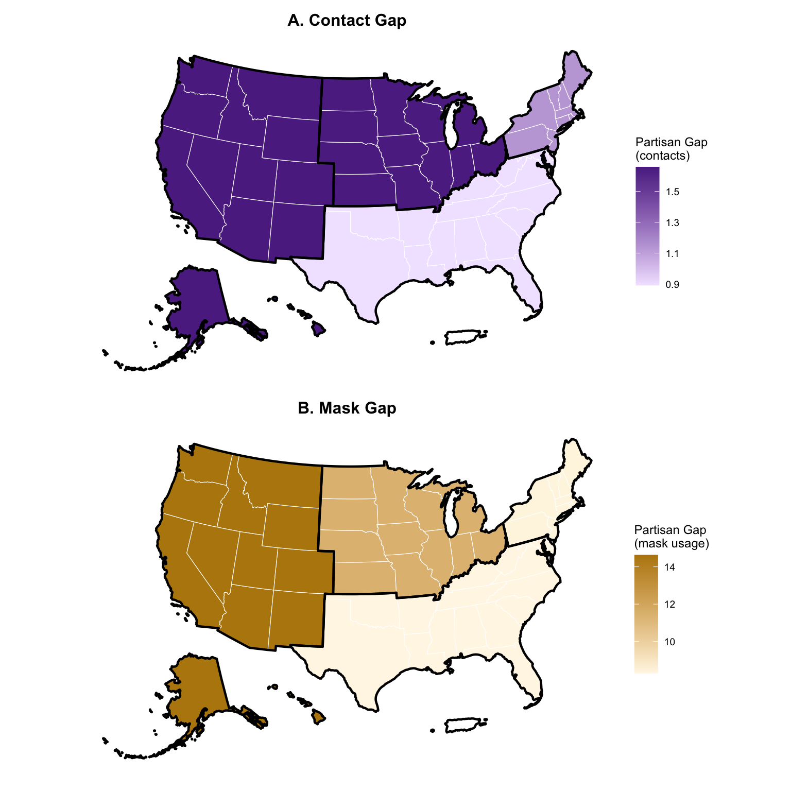
Taken together, we can assess the scorecard of competing explanations. Demographic composition does not account for partisan gaps: they persist after controlling for age, gender, race, education, and urbanicity. Information and risk perception offer a partial account for mask-wearing but fail for contacts, where gaps remain at every level of stated concern. Objective severity temporarily compresses contact gaps during mortality surges but leaves mask polarization untouched — and the disconnect between stated concern and behavior during the winter surge undermines the premise that perceptions faithfully guide action. Policy environments do not explain the gaps: they persist within strict, lenient, and no-mandate areas alike. Regional culture shifts absolute levels of behavior but does not close the partisan divide, and even partisans living among members of the opposing party maintain behavioral differences.
The surviving explanation is that partisan identity itself drives behavioral polarization — what we term “portable polarization.” Partisans carry their behavioral patterns with them across diverse environments, even as they adjust modestly toward local norms. Each competing factor matters at the margins — perception narrows the mask gap among the very concerned, mortality temporarily compresses the contact gap, and regional context shifts absolute levels — but none eliminates the fundamental partisan divide. The gaps are not artifacts of Republicans and Democrats sorting into different environments; they are features of partisan identity itself.
4 Discussion
A long tradition in sociology treats social identities as structuring forces that shape behavior through mechanisms of group conformity, boundary maintenance, and durable dispositions (Bourdieu 1984; Lamont 2000; Tajfel and Turner 1979). In the health domain specifically, Cockerham (2005) argued that health behaviors are not reducible to individual agency but are structured by collective, group-level forces — an insight that health lifestyles research has since confirmed across multiple populations and behavioral domains (Mollborn et al. 2021). Our findings extend this tradition by identifying partisan identity as a newly potent structuring force in health behavior. Partisan differences in social contacts, mask-wearing, and vaccine acceptance during the COVID-19 pandemic were not only substantial — often exceeding differences by race, gender, or education — but proved remarkably resistant to every alternative explanation we tested, consistent with Clinton et al. (2021)’s finding that partisanship was roughly 27 times more important than public health concerns in predicting pandemic mobility behavior. They persisted within shared policy environments, across geographic regions, regardless of local partisan composition, and after controlling for demographics. This pattern of “portable polarization” — behavioral differences that prove remarkably robust across diverse contexts, even as partisans adjust modestly toward local norms — is consistent with the claim that partisanship has become a fundamental social identity in American life, one that shapes health behavior directly rather than merely correlating with the environments in which partisans are embedded.
The specific patterns of variation in partisan gaps offer insight into the mechanisms through which identity operates. Social contacts — a private, high-stakes behavior — provide a particularly informative theoretical test because staying home, avoiding gatherings, and reducing daily interactions are largely unobservable by one’s political community; they cannot easily function as signals of partisan allegiance in the way that visible behaviors can. Contact gaps narrowed during high-mortality periods, suggesting that concrete, undeniable consequences can temporarily override partisan divergence when the behavior is private and the stakes are immediate. Mask-wearing — a visible, low-cost behavior — showed steadily widening polarization regardless of severity, consistent with its emergence as what Goffman (1963) would recognize as a stigma symbol: a publicly legible marker that instantly communicates group membership, making it a site of impression management rather than a calculated response to risk. Research on social norms and COVID-19 compliance has distinguished public-facing from private protective behaviors, finding that mandatory mask policies shaped not only compliance but social perceptions of others’ behavior (Betsch et al. 2020), while work on identity-protective cognition has shown that culturally diverse individuals selectively credit and dismiss evidence in patterns that reflect their group’s beliefs — a dynamic that intensifies rather than diminishes among the most scientifically literate (Kahan 2017). Baxter-King et al. (2022) gesture toward this visibility mechanism, noting that mask-wearing is “publicly observable” compared to other mitigation strategies and finding that local partisan context shaped Republican but not Democratic mask-wearing. Our findings extend this framework by systematically comparing behaviors that differ in social visibility within the same sample — a test that prior work, including Baxter-King et al., was not designed to make. That masking diverged more sharply by partisanship than contact reduction did demonstrates that the symbolic dimension of health behavior was politically activated in a way that private protective behaviors were not. The logic of this comparison is diagnostic: if partisan gaps were driven entirely by generalized health lifestyle dispositions or divergent risk perceptions, both behaviors should show similar partisan divergence, since both reduce disease transmission. An alternative reading might attribute the divergence to differences in personal cost rather than social visibility, since reducing contacts entails greater material sacrifice than wearing a mask. But this account generates the wrong temporal prediction: if behavioral gaps primarily reflect cost sensitivity, mask gaps should also narrow during mortality surges, since the health cost of not masking rises alongside mortality. Instead, only the private, high-cost behavior responded to heightened risk while the visible, low-cost behavior did not, a pattern more consistent with a social observability mechanism in which the identity costs of deviating from one’s group norm on a publicly legible behavior offset the health benefits of compliance. Had masking and contact patterns tracked each other closely within partisan groups, that would suggest a coherent underlying behavioral disposition, the kind of integrated health lifestyle that Cockerham (2005) describes. That they diverged, specifically in the direction predicted by social visibility, points instead to identity-driven processes operating selectively on publicly observable behaviors. We note, however, that the widening mask gap is consistent with more than one identity-based mechanism. The pattern could reflect active signaling, in which partisans consciously display or withhold masks to communicate group membership, but it could equally reflect the gradual crystallization of group norms: Democrats habituating to mask-wearing as an unremarkable default within their social networks while Republicans consolidated an anti-mask norm within theirs. These mechanisms are not mutually exclusive, and both are fundamentally identity-driven, but they differ in the degree of intentionality involved. Our data cannot distinguish between them, though the steady, monotonic widening of the gap over time is perhaps more consistent with norm crystallization than with episodic signaling in response to specific encounters. What our data do establish is that whatever the specific mechanism, it operated selectively on the visible behavior and not on the private one, confirming that social observability is a necessary condition for the identity process at work.
The geographic distribution of partisan gaps further illuminates how context and identity interact. Where gaps were smaller, as in the South, the narrowing reflected Democrats behaving less cautiously rather than Republicans becoming more cautious, a pattern visible across demographic and contextual subgroups (Section 6.14): context shifted absolute levels of behavior without closing the partisan divide. This asymmetric pattern is consistent with Baxter-King et al. (2022)‘s finding that local partisan context shaped Republican but not Democratic mask-wearing, and suggests more broadly that the two parties’ health behaviors may be anchored to different reference points. If Republican behavior is primarily shaped by nationally circulated partisan cues and media ecosystems that do not vary much by region, while Democratic behavior responds more to local norms and conditions, we would expect exactly the pattern we observe: gaps that persist in every region but vary in magnitude as local conditions pull one group toward the behavioral baseline of its surroundings. Regional variation in gap size therefore does not undermine the portable polarization thesis; rather, it specifies the channel through which context operates, shifting the behavior of one group more than the other while leaving the fundamental partisan divide intact.
Earlier work using GPS mobility data found that partisan identity moderated responses to elite messaging from the pandemic’s earliest days: Democratic-leaning counties responded about twice as strongly to governors’ stay-at-home recommendations as Republican-leaning counties, even after accounting for demographics, occupational structure, and local case rates (Grossman et al. 2020). Our individual-level data are consistent with this early divergence but reveal an additional dynamic: the behavioral gaps we measure widened over time, particularly for visible behaviors like mask-wearing, suggesting that what began as differential responsiveness to elite cues crystallized into durable identity markers as the pandemic progressed. The temporal pattern for mask-wearing mirrors what Clinton et al. (2021) documented for stated concern: in their data, Democrats maintained consistently high concern while Republicans became increasingly less concerned over time, with the gap accelerating after partisan elite cues intensified. Our mask-wearing data follow this same widening trajectory — but our contact data do not, revealing a critical disconnect between stated concern and actual behavior. During the winter 2020-21 surge, Republicans reported their lowest concern levels yet reduced contacts substantially, suggesting that expressed attitudes had become performative signals of group allegiance while behavior tracked objective conditions. This finding challenges the assumption, common in survey-based health research, that stated attitudes reliably predict or explain protective behavior on politicized health topics. More fundamentally, the persistence of partisan behavioral gaps even after accounting for perceived severity suggests that something beyond risk cognition is driving behavior — the behavior has decoupled from the belief. This residual gap is precisely where identity-based theories do their explanatory work: social categorization processes that make partisan membership salient in everyday encounters (Tajfel and Turner 1979), impression management pressures that make visible behaviors like mask-wearing sites of stigma or prestige within one’s community (Goffman 1963), and symbolic boundary maintenance that transforms health practices into markers of group belonging (Lamont 2000). The practical implication is that public health messaging designed to increase reported concern may change what people say without changing what they do — and that interventions targeting the objective risk environment (e.g., making consequences visible and local) may be more effective than those targeting stated attitudes. Experimental evidence underscores the identity dynamics at work: (Pink et al. 2021) found that Republican elite endorsements increased vaccination intentions among Republicans, while Democratic endorsements produced backlash, actually reducing Republicans’ willingness to encourage others to vaccinate. This suggests that effective public health communication on politicized topics may need to work through partisan identity rather than against it — though such an approach risks further entrenching the very polarization it seeks to navigate.
This study contributes to the sociology of health by demonstrating that partisan identity operates as an independent driver of health behavior, not reducible to policy, information, or place — extending recent work in this journal showing that partisan polarization structures trust in scientific authorities in ways that intensify among the most knowledgeable (Gauchat 2025) from the domain of attitudes to the domain of behavior. The competing-theories framework offers a generalizable approach for descriptive studies seeking to constrain causal explanations: by systematically testing where each theory predicts gaps should narrow, we identify the explanation that survives the most stringent comparisons. Several limitations warrant consideration alongside these contributions. Our data are observational and cross-sectional within each wave, precluding strong causal claims; we observe associations between partisan identity and health behavior but cannot definitively rule out unmeasured confounders. All behavioral measures are self-reported, raising several interrelated concerns about partisan survey bias. Democrats may under-report contacts and over-report mask usage to conform to perceived group expectations, just as Republicans may do the reverse; Yair and Huber (2020) have shown that standard survey items can confound sincere partisan differences with expressive responding — insincere answers that communicate partisan allegiance rather than actual perceptions or behaviors. If such dynamics operate in our data, we would be capturing identity signaling in the survey response itself rather than in the underlying behavior — though notably, this would constitute the same identity-driven mechanism we theorize about, operating at the level of survey response rather than health behavior. Additionally, Clinton, Lapinski, and Trussler (2022) documented differential partisan nonresponse in surveys conducted during this period, with Republicans — particularly those least engaged with public health guidance — being less likely to participate. If this selection operates in our data, it would likely attenuate the partisan gaps we estimate, because the Republicans missing from our sample are plausibly those with the most contacts and least mask usage; our estimates would thus represent a conservative lower bound on the true behavioral divergence (see Section 6.8 for further discussion). The specificity of our measures — actual contact counts for the previous day, mask usage during specific recalled interactions — reduces the scope for expressive responding relative to abstract attitudinal items, but cannot eliminate it. Crucially, however, even if expressive responding inflates the mask-wearing gap, the contact measure provides a partial check: counting how many people you spoke with face-to-face yesterday is a concrete, verifiable recall task with less room for partisan motivated reasoning than reporting whether you “usually” wear a mask, and partisan gaps in contacts persist even during high-mortality periods when expressive incentives to minimize concern were strongest among Republicans. Our survey waves span April 2020 to May 2021, capturing a critical period but not the later Delta and Omicron waves or the longer arc of vaccine polarization; Wallace et al. (2023) documented that the partisan mortality gap widened substantially after vaccines became available, suggesting that the behavioral divergence we observe likely intensified beyond our observation window. These temporal boundaries are also a strength: by examining a period when partisan scripts were actively forming, we observe polarization as it developed rather than after it crystallized.
Each limitation suggests a direction for future work. Longitudinal designs following the same individuals over time could establish whether partisan identity causes behavioral change or whether partisan self-sorting into different behavioral patterns precedes identity consolidation. Comparative studies across health crises — including non-pandemic contexts such as gun violence, environmental health, or reproductive health — could test whether portable polarization is specific to COVID-19 or characterizes partisan identity’s influence on health behavior more broadly; evidence that ideology shaped vaccine hesitancy even before the pandemic (Baumgaertner, Carlisle, and Justwan 2018) suggests that the dynamics we document may have deeper roots. Experimental work could examine whether making mortality consequences salient narrows partisan gaps in real time, providing a causal test of the severity mechanism we observe descriptively. Finally, network-based studies could illuminate the social pathways through which partisan behavioral norms are transmitted and reinforced — Mosleh et al. (2021) found that shared partisanship dramatically increases social tie formation, suggesting that partisan homophily may create echo chambers for health behavior norms that amplify the divergence we document.
Our findings suggest that the familiar sociological insight — that social identities structure behavior through mechanisms beyond individual preference — applies forcefully to partisan identity in the health domain. The implication is not simply that partisans disagreed about COVID-19, but that the same dynamics of group conformity, symbolic boundary-making, and habitus that sociologists have long studied in the contexts of race, religion, and class now operate through partisanship as well. Understanding how to bridge these divides during health crises — or, more ambitiously, how to prevent health from becoming partisan terrain in the first place — requires not just better information or clearer messaging, but a sociological understanding of why people adopt the health behaviors their group expects of them, even when those behaviors may not serve their material interests.
5 References
Allcott, Hunt, Levi Boxell, Jacob Conway, Matthew Gentzkow, Michael Thaler, and David Yang. 2020. “Polarization and Public Health: Partisan Differences in Social Distancing During the Coronavirus Pandemic.” Journal of Public Economics 191:104254. doi:10.1016/j.jpubeco.2020.104254.
Baum, Matthew A. 2011. “Red State, Blue State, Flu State: Media Self-Selection and Partisan Gaps in Swine Flu Vaccinations.” Journal of Health Politics, Policy and Law 36(6):1021–59. doi:10.1215/03616878-1460569.
Baumgaertner, Bert, Juliet E. Carlisle, and Florian Justwan. 2018. “The Influence of Political Ideology and Trust on Willingness to Vaccinate.” PLOS ONE 13(1):e0191728. doi:10.1371/journal.pone.0191728.
Baxter-King, Ryan, Jacob R. Brown, Ryan D. Enos, Arash Naeim, and Lynn Vavreck. 2022. “How Local Partisan Context Conditions Prosocial Behaviors: Mask Wearing During COVID-19.” Proceedings of the National Academy of Sciences 119(21):e2116311119. doi:10.1073/pnas.2116311119.
Bourdieu, Pierre. 1984. Distinction: A Social Critique of the Judgement of Taste. Cambridge, MA: Harvard University Press.
Clinton, J., J. Cohen, J. Lapinski, and M. Trussler. 2021. “Partisan Pandemic: How Partisanship and Public Health Concerns Affect Individuals’ Social Mobility During COVID-19.” Science Advances 7(2):eabd7204. doi:10.1126/sciadv.abd7204.
Clinton, Joshua D., John S. Lapinski, and Marc J. Trussler. 2022. “Reluctant Republicans, Eager Democrats?: Partisan Nonresponse and the Accuracy of 2020 Presidential Pre-Election Telephone Polls.” Public Opinion Quarterly 86(2):247–69. doi:10.1093/poq/nfac011.
Cockerham, William C. 2005. “Health Lifestyle Theory and the Convergence of Agency and Structure∗.” Journal of Health and Social Behavior 46(1):51–67. doi:10.1177/002214650504600105.
Coleman, Max E., and Matthew A. Andersson. 2024. “Hurt on Both Sides: Political Differences in Health and Well-Being During the COVID-19 Pandemic.” Journal of Health and Social Behavior 65(1):94–109. doi:10.1177/00221465231200500.
Feehan, Dennis M., and Ayesha S. Mahmud. 2021. “Quantifying Population Contact Patterns in the United States During the COVID-19 Pandemic.” Nature Communications 12(1):893. doi:10.1038/s41467-021-20990-2.
Gadarian, Shana Kushner, Sara Wallace Goodman, and Thomas B. Pepinsky. 2021. “Partisanship, Health Behavior, and Policy Attitudes in the Early Stages of the COVID-19 Pandemic.” PLOS ONE 16(4):e0249596. doi:10.1371/journal.pone.0249596.
Gadarian, Shana Kushner, Sara Wallace Goodman, and Thomas B. Pepinsky. 2024. “Trump Support Explains COVID-19 Health Behaviors in the United States.” Public Opinion Quarterly 88(1):161–74. doi:10.1093/poq/nfad062.
Gallup, Gallup. 2021. “Party ID Average for 2020 Winds Up Similar to Prior Years.” Gallup.com.
Gauchat, Gordon. 2012. “Politicization of Science in the Public Sphere: A Study of Public Trust in the United States, 1974 to 2010.” American Sociological Review 77(2):167–87. doi:10.1177/0003122412438225.
Gauchat, Gordon. 2025. “Partisan Polarization and Public Trust in Vaccine Science: Mapping Cultural Authority.” Journal of Health and Social Behavior 00221465251396037. doi:10.1177/00221465251396037.
Goffman, Erving. 1963. Stigma: Notes on the Management of Spoiled Identity. Englewood Cliffs, NJ: Prentice-Hall.
Gollwitzer, Anton, Cameron Martel, William J. Brady, Philip Pärnamets, Isaac G. Freedman, Eric D. Knowles, and Jay J. Van Bavel. 2020. “Partisan Differences in Physical Distancing Are Linked to Health Outcomes During the COVID-19 Pandemic.” Nature Human Behaviour 4(11):1186–97. doi:10.1038/s41562-020-00977-7.
Graf, Joseph, and Sean Aday. 2008. “Selective Attention to Online Political Information: Journal of Broadcasting & Electronic Media: Vol 52, No 1.” Journal of Broadcasting & Electronic Media 52(1):86–100. doi:https://doi.org/10.1080/08838150701820874.
Green, Donald P. 2002. Partisan Hearts and Minds : Political Parties and the Social Identities of Voters. New Haven ; London : Yale University Press.
Green, Jon, Jared Edgerton, Daniel Naftel, Kelsey Shoub, and Skyler J. Cranmer. 2020. “Elusive Consensus: Polarization in Elite Communication on the COVID-19 Pandemic.” Science Advances 6(28):eabc2717. doi:10.1126/sciadv.abc2717.
Grossman, Guy, Soojong Kim, Jonah M. Rexer, and Harsha Thirumurthy. 2020. “Political Partisanship Influences Behavioral Responses to Governors’ Recommendations for COVID-19 Prevention in the United States.” Proceedings of the National Academy of Sciences 117(39):24144–53. doi:10.1073/pnas.2007835117.
Hawks, Kate. 2025. “Cultural Authority and (Non) Compliance with Public Health Directives: The Effect of Legitimacy and Values on Behavior During the COVID-19 Pandemic.” Journal of Health and Social Behavior 66(4):547–66. doi:10.1177/00221465241312696.
Inc, Gallup. 2021. “Democratic, Republican Confidence in Science Diverges.” Gallup.com.
Iyengar, Shanto, and Masha Krupenkin. 2018. “The Strengthening of Partisan Affect.” Political Psychology 39(S1):201–18. doi:10.1111/pops.12487.
Iyengar, Shanto, and Sean J. Westwood. 2015. “Fear and Loathing Across Party Lines: New Evidence on Group Polarization.” American Journal of Political Science 59(3):690–707. https://www.jstor.org/stable/24583091.
Kahan, Dan M. 2017. “Misconceptions, Misinformation, and the Logic of Identity-Protective Cognition.”
Kalmoe, Nathan P., and Lilliana Mason. 2022. Radical American Partisanship. University of Chicago Press.
Kaushal, Neeraj, Yao Lu, Robert Y. Shapiro, and Jennifer So. 2022. “American Attitudes Toward COVID-19: More Trumpism Than Partisanship.” American Politics Research 50(1):67–82. doi:10.1177/1532673X211046251.
Krieger, Nancy, Christian Testa, Jarvis T. Chen, William P. Hanage, and Alecia J. McGregor. 2022. “Relationship of Political Ideology of US Federal and State Elected Officials and Key COVID Pandemic Outcomes Following Vaccine Rollout to Adults: April 2021–March 2022.” The Lancet Regional Health – Americas 16. doi:10.1016/j.lana.2022.100384.
Lamont, Michèle. 2000. The Dignity of Working Men: Morality and the Boundaries of Race, Class, and Immigration. Cambridge, MA / New York: Harvard University Press / Russell Sage Foundation.
Milosh, Maria, Marcus Painter, Konstantin Sonin, David Van Dijcke, and Austin L. Wright. 2021. “Unmasking Partisanship: Polarization Undermines Public Response to Collective Risk.” Journal of Public Economics 204:104538. doi:10.1016/j.jpubeco.2021.104538.
Mollborn, Stefanie, Elizabeth M. Lawrence, and Jarron M. Saint Onge. 2021. “Contributions and Challenges in Health Lifestyles Research.” Journal of Health and Social Behavior 62(3):388–403. doi:10.1177/0022146521997813.
Montez, Jennifer Karas, Shannon M. Monnat, Emily E. Wiemers, Douglas A. Wolf, and Xue Zhang. 2025. “Stability and Volatility in the Contextual Predictors of Working-Age Mortality in the United States.” Journal of Health and Social Behavior 66(3):278–98. doi:10.1177/00221465241271072.
Neelon, Brian, Fedelis Mutiso, Noel T. Mueller, John L. Pearce, and Sara E. Benjamin-Neelon. 2021. “Spatial and Temporal Trends in Social Vulnerability and COVID-19 Incidence and Death Rates in the United States.” PLoS ONE 16(3):e0248702. doi:10.1371/journal.pone.0248702.
Pink, Sophia L., James Chu, James N. Druckman, David G. Rand, and Robb Willer. 2021. “Elite Party Cues Increase Vaccination Intentions Among Republicans.” Proceedings of the National Academy of Sciences 118(32):e2106559118. doi:10.1073/pnas.2106559118.
Rothgerber, Hank, Thomas Wilson, Davis Whaley, Daniel L. Rosenfeld, Michael Humphrey, Allie Moore, and Allison Bihl. 2020. “Politicizing the COVID-19 Pandemic: Ideological Differences in Adherence to Social Distancing.”
Tajfel, Henri, and John C. Turner. 1979. “An Integrative Theory of Intergroup Conflict.” Pp. 33–47 in The Social Psychology of Intergroup Relations, edited by W. G. Austin and S. Worchel. Monterey, CA: Brooks/Cole.
Van Bavel, Jay J., Shana Kushner Gadarian, Eric Knowles, and Kai Ruggeri. 2024. “Political Polarization and Health.” Nature Medicine 30(11):3085–93. doi:10.1038/s41591-024-03307-w.
Wallace, Jacob, Paul Goldsmith-Pinkham, and Jason L. Schwartz. 2023. “Excess Death Rates for Republican and Democratic Registered Voters in Florida and Ohio During the COVID-19 Pandemic.” JAMA Internal Medicine 183(9):916–23. doi:10.1001/jamainternmed.2023.1154.
Yair, Omer, and Gregory A. Huber. 2020. “How Robust Is Evidence of Partisan Perceptual Bias in Survey Responses?: A New Approach for Studying Expressive Responding.” Public Opinion Quarterly 84(2):469–92. doi:10.1093/poq/nfaa024.
6 Appendix
6.1 APPENDIX A. Vaccine Acceptance
Vaccine acceptance, measured during the final survey wave in May 2021, showed pronounced partisan differences. We define vaccine acceptance as being vaccinated or intending to get vaccinated, which captures underlying attitudes toward vaccination independent of differential access during the early rollout period. Among Democrats, 41.1% accepted vaccines, compared to 34.5% of Independents and 34.8% of Republicans—a 6 percentage point gap. Because vaccination was assessed in a single wave, it cannot be examined temporally or geographically with the same depth as contacts and mask-wearing; this finding should be interpreted as a cross-sectional snapshot from May 2021, early in the U.S. rollout when supply constraints and eligibility tiers varied substantially across states.
6.2 APPENDIX B. Pandemic Risk Perceptions Over Time
The main text documents substantial partisan differences in pandemic risk perception, with Democrats more likely than Republicans to report being “very concerned” about COVID-19. Figure 6 shows the overall distribution of concern by party, pooled across all waves. This section then examines how these perception gaps evolved over the course of the pandemic, paralleling our analysis of behavioral gaps over time.
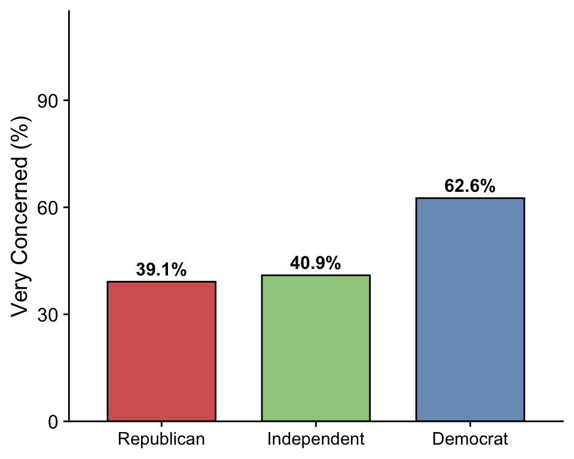
Figure 7 displays the percentage of each partisan group reporting being “very concerned” about COVID-19 across survey waves. Figure 8 shows the Democrat-Republican gap in this measure over time, with weekly COVID-19 cases shown in the background for context.
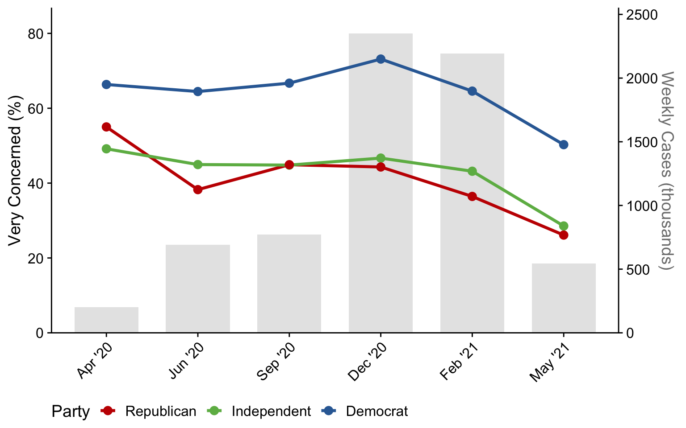

The perception gap was smallest at the beginning of the pandemic: just 11.3 percentage points in Apr ’20. By Dec ’20, the gap had grown to 28.8 percentage points. In April 2020, Republicans were nearly as likely as Democrats to report being “very concerned” about COVID-19; by June 2020, that gap had more than doubled, and it remained elevated throughout the remainder of the study period.
Critically, while incidence was relatively low in April 2020, mortality rates were at their highest—the virus was simply more deadly in the early months before treatments improved and clinical experience accumulated. This pattern is consistent with our broader finding that concrete, visible consequences reduce polarization. When the threat was most lethal, perceptions were least polarized. As case fatality rates declined over subsequent months—even as case counts rose—the perception gap widened. The combination of declining lethality and escalating politicization of the pandemic through debates over lockdowns, masks, and the credibility of public health guidance likely both contributed to this divergence.
All three partisan groups showed declining concern over time, particularly from the winter surge through spring 2021 as vaccines became widely available. However, this decline was steeper among Republicans and Independents than among Democrats, maintaining the perception gap even as overall concern fell.
6.2.1 Perceptions vs. Local Pandemic Conditions
The previous figures show perceptions against national case counts. But Republicans and Democrats live in different places and thus experienced different local pandemic conditions. Figure 9 shows each party’s stated concern alongside the average local incidence rate they actually experienced, given where respondents in each party lived. This allows us to assess whether perceptions tracked the objective conditions each group faced.

The figure reveals that Republicans and Democrats experienced similar local incidence trajectories—both groups saw the winter 2020–21 surge—yet their perceptions diverged over time. Notably, incidence was relatively low in April 2020 when the perception gap was smallest, complicating any simple story about incidence driving perceptions.
Figure 10 shows the same comparison using local mortality rates rather than incidence. Mortality is a more concrete and visible indicator of pandemic severity—deaths are reported in local news, experienced through social networks, and marked by obituaries—making it a stronger test of whether perceptions tracked objective conditions.
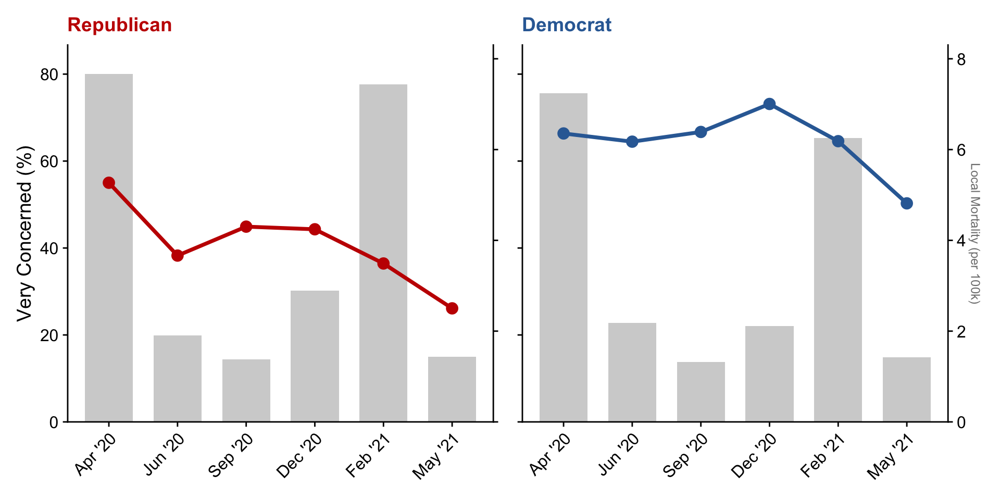
The mortality figure reveals a striking pattern: local mortality rates were actually highest in April 2020—precisely when the perception gap was smallest. The virus was simply more deadly in the early months before treatments improved and clinical protocols developed. As mortality rates declined over subsequent months, the perception gap widened. This pattern supports our broader thesis that concrete, visible consequences reduce polarization: when the threat was most lethal, partisans were most aligned in their concern.
The winter 2020–21 surge presents a more complex picture. Mortality rose sharply, and Republicans did reduce their contacts in response—yet their stated concern continued to decline. This disconnect between mortality-driven behavior and diverging perceptions suggests that by this point, expressed concern had become entangled with partisan identity in ways that were resistant to objective conditions. The early-pandemic alignment, when partisanship had not yet fully politicized COVID-19, may represent a window before symbolic boundaries hardened. Once the pandemic became a site of partisan conflict, stated perceptions became partly performative—reflecting group allegiance rather than risk assessment—even as underlying behavior continued to respond to concrete threat.
6.2.2 Health Behaviors by Concern Level
Figure 11 shows health behaviors by party within each level of stated concern. This complements Figure 3 in the main text by showing the absolute levels rather than the gaps.

Figure 12 shows how behavior among the “very concerned” subgroup evolved over time, alongside the changing share of each party reporting high concern. This analysis reveals that the meaning of “very concerned” changed over the pandemic as different types of partisans selected into this category.

Panel A shows that the share reporting “very concerned” declined for both parties, but especially for Republicans (55% to 26% vs. 67% to 49% for Democrats). Panels B and C reveal how behavior among the very concerned evolved—and the patterns differ in revealing ways.
For contacts (Panel B), very concerned Republicans initially reported more contacts than very concerned Democrats (gap of +1.4 to +3.4 contacts in waves 1-3). But this gap collapsed during the winter 2020-21 surge (wave 4-5) and actually reversed by waves 5-6, with concerned Democrats reporting slightly more contacts. This timing aligns with the lifting of stay-in-place restrictions: among all respondents, the percentage reporting being under a stay-in-place order declined from approximately 95% in wave 1 to 70-81% by wave 5, with Republicans showing a larger decline than Democrats (Figure 15 in Section 6.3). The contact pattern suggests mortality-driven convergence early on, followed by Democrats increasing contacts as restrictions lifted—perhaps reflecting a strategic shift toward relying on masks and vaccines rather than contact reduction.
For masks (Panel C), a similar reversal occurred but with different timing: very concerned Republicans wore masks at higher rates than very concerned Democrats in waves 1-3, but by wave 4 Democrats wore masks more. Unlike contacts, this reversal did not correspond to the mortality surge or the lifting of restrictions—it persisted even as mortality declined in waves 5-6. This pattern suggests that mask-wearing became increasingly tied to partisan identity over time, such that even “very concerned” Republicans reduced masking as the behavior became symbolically marked.
6.2.3 Wave 1 Only: Gaps by Concern Level When Mortality Was Highest
The pooled analysis above combines data from all waves. To examine whether the relationship between concern and partisan gaps differed when objective threat was highest, Figure 13 replicates this analysis for Wave 1 (April 2020) only—the period when mortality rates were at their peak.

Comparing Wave 1 to the pooled results reveals whether the early pandemic—before extensive politicization—showed different patterns. If concrete mortality threat reduces polarization, we might expect smaller or even reversed gaps in Wave 1 compared to later periods.
6.2.4 The Politicization of Mask-Wearing: Exact Gap Values
Figure 12 above shows how mask-wearing patterns among the “very concerned” reversed over time, alongside the changing composition of who reports being very concerned. Figure 14 provides the exact D-R gap values for each wave.
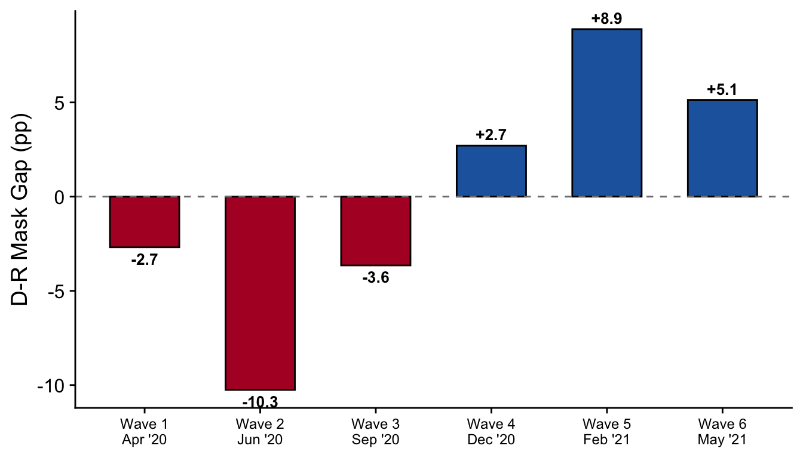
As discussed in the main text, two dynamics likely contribute to this reversal: (1) masks became increasingly politicized as partisan signals, and (2) the Republicans who continued to report being “very concerned” became an increasingly select and unusual subset as overall Republican concern declined.
6.3 APPENDIX C. Stay-in-Place Orders Over Time
Figure 15 shows the percentage of respondents reporting being under a stay-in-place order across the study period. The BICS survey asked respondents whether they were currently under a stay-in-place order in waves 1-5, but dropped this question entirely in wave 6 (May 2021)—the only survey item discontinued during the study—reflecting the widespread lifting of restrictions by that time.
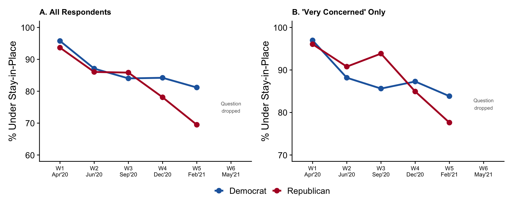
Among all respondents (Panel A), the percentage reporting being under a stay-in-place order declined from approximately 95% in wave 1 to 70-81% by wave 5, with Republicans showing a larger decline than Democrats (11 percentage point gap by wave 5). This overall pattern is more representative than the “very concerned” subset (Panel B), since the share of Republicans reporting being “very concerned” declined substantially over the study—from 55% in wave 1 to just 26% by wave 6—making the very concerned Republicans an increasingly selective group. The declining trend in stay-in-place orders provides context for the behavioral changes observed in the main text: as restrictions lifted, particularly between waves 4-6, Democrats increased their contacts while maintaining high mask usage—consistent with a strategic shift toward relying on masks and vaccines for protection as they resumed social activities.
6.4 APPENDIX D. Interaction Models: Concern and Mortality as Moderators
To formally test whether stated concern and objective mortality rates moderate partisan gaps in health behaviors, we estimate interaction models of the form:
\[\text{Behavior} = \beta_0 + \beta_1(\text{Republican}) + \beta_2(\text{Concern}) + \beta_3(\text{Mortality}) + \beta_4(\text{Rep} \times \text{Concern}) + \beta_5(\text{Rep} \times \text{Mortality}) + \text{FE}\]
In this specification, the partisan gap equals \(\beta_1 + \beta_4(\text{Concern}) + \beta_5(\text{Mortality})\). A negative \(\beta_4\) indicates that higher concern narrows the partisan gap; a negative \(\beta_5\) indicates that higher mortality narrows it. Concern is measured as a binary indicator for reporting being “very concerned” about COVID-19; mortality is the standardized log of the previous week’s county-level mortality rate.
We estimate two versions of this model to distinguish between national/temporal patterns and local variation:
Wave FE model: Includes wave fixed effects and controls for metropolitan status. This captures how the partisan gap varies with national pandemic severity (high-mortality waves vs. low-mortality waves).
County FE model: Includes county fixed effects. This asks: within the same county, when local mortality rises, does the partisan gap narrow? This isolates the effect of local conditions from all time-invariant county characteristics.

Figure 16 displays the results from both specifications.
Wave FE Model (National/Temporal Patterns): For contacts, the baseline Republican-Democrat gap is 1.45 contacts per day. The concern interaction is statistically significant and negative (\(\beta\) = -1.01, p = 0.03), indicating that stated concern does modestly narrow the partisan contact gap. The mortality interaction is negative (\(\beta\) = 0.11, p = 0.573): during high-mortality waves, the partisan gap narrows.
For masks, the baseline gap is 10.4 percentage points. The concern interaction is large and significant (\(\beta\) = 12.2, p < 0.001): being “very concerned” substantially narrows the mask gap. The mortality interaction is smaller and in the opposite direction (\(\beta\) = 1.7).
County FE Model (Local Variation): The county FE model asks whether the partisan gap narrows within counties when local mortality rises. For contacts, the mortality interaction is -0.28 (p = 0.424), indicating that local mortality conditions also moderate the partisan gap. For masks, the local mortality interaction is 4.7 (p = 0.001).
Both specifications support the same conclusion: concern moderates the mask gap but not the contact gap; mortality moderates the contact gap but not the mask gap. This pattern holds whether we examine national trends (wave FE) or local variation (county FE), suggesting it reflects a genuine behavioral response to pandemic conditions rather than a compositional artifact.
6.5 APPENDIX E. Adjusted Partisan Behaviors Over Time
The main text presents descriptive partisan differences in health behaviors over time. To assess whether these patterns persist after accounting for demographic and contextual factors, we estimate regression models with party-by-wave interactions, controlling for age, race/ethnicity, Hispanic origin, gender, education, household size, congressional district partisan composition, and local mortality rates. We then extract estimated marginal means (emmeans) for each party at each wave, averaging over covariates. This approach isolates partisan differences while holding constant the demographic and geographic factors that might otherwise confound comparisons.
Figure 17 displays the adjusted behavior levels by party across survey waves, and Figure 18 shows the resulting partisan gaps.
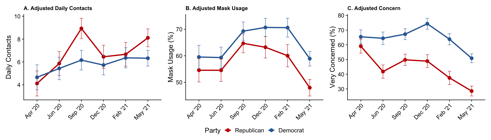

6.5.1 Interpretation
After adjusting for covariates, the patterns of partisan differences reveal important nuances. For contact behavior, the descriptive data show that partisan gaps were smallest early in the pandemic, with Republicans reporting only 0.4 more contacts than Democrats in April 2020 compared to gaps of 1-3 contacts in later waves. The adjusted analysis goes further: after controlling for demographics, the April 2020 gap is not only small but statistically indistinguishable from zero (see Figure 18, gray bars indicate non-significant differences). In fact, the point estimate is slightly negative, suggesting that if anything, Democrats had marginally more contacts than Republicans when mortality was at its peak. This stands in stark contrast to the large, statistically significant gaps observed in September 2020 and May 2021, periods of relatively lower pandemic intensity. The pattern supports the interpretation that concrete, visible threat can eliminate—not merely reduce—partisan divergence in behavior.
For mask-wearing, the adjusted analysis reveals that partisan differences fluctuated rather than monotonically increasing. The Democrat-Republican mask gap (with Democrats wearing masks more) ranged from 4.6 percentage points in Sep ’20 to 10.9 percentage points in May ’21. Notably, the gap was relatively narrow during fall 2020 when mask usage was high across all groups, but widened again in early 2021 as vaccines became available and Republicans began to decrease mask usage more rapidly.
For stated concern, the adjusted analysis confirms that the perception gap was smallest at the beginning of the pandemic (when mortality was highest) and widened substantially thereafter. The adjusted Democrat-Republican concern gap ranged from 6.4 percentage points in Apr ’20 to 26.3 percentage points in Feb ’21. This pattern parallels the contact findings: when objective threat was most severe, partisan gaps in both behavior and perception were smallest. The subsequent widening of the concern gap, even as mortality rates declined, supports the interpretation that politicization drove perceptual divergence.
These adjusted estimates confirm that partisan differences in health behaviors and perceptions were not simply artifacts of demographic composition or geographic sorting. Even after controlling for a comprehensive set of covariates, substantial partisan gaps persisted throughout the pandemic, though their magnitude varied with pandemic conditions—narrowing when mortality was highest and widening as the pandemic became increasingly politicized.
6.6 APPENDIX F. Partisan Differences Within Policy Environments
A potential alternative explanation for partisan differences in health behaviors is that Democrats disproportionately reside in jurisdictions with stricter COVID-19 policies, and their behavior simply reflects compliance with local regulations rather than partisan preferences. To address this concern, we examine whether partisan differences persist within the same policy environment.
Figure 19 and Figure 20 display mean contact rates and mask usage by party, stratified by county-level mask mandate policy (No Mandate, Less Strict, or Strict). If policy environment fully explained partisan differences, we would expect the gaps between parties to disappear within each policy category.
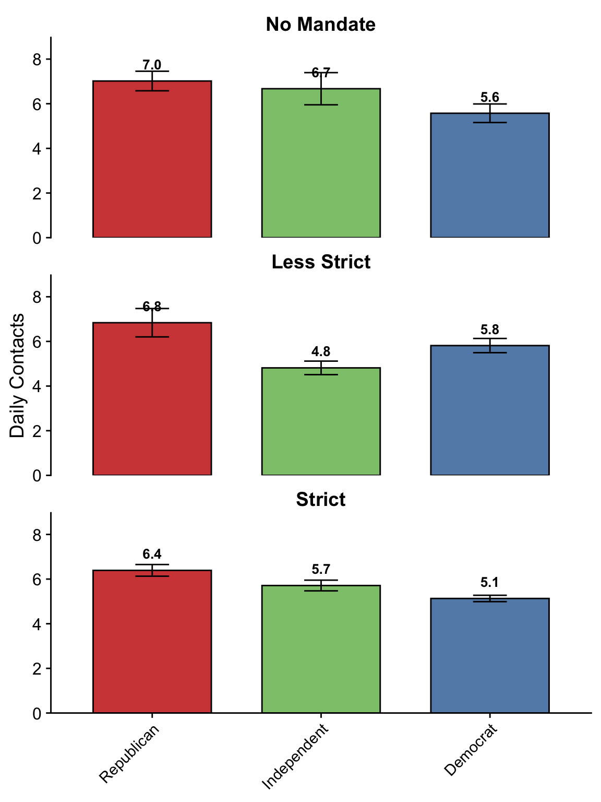

The results clearly demonstrate that partisan differences are not simply artifacts of differential policy exposure. Within each policy environment, Republicans reported more daily contacts than Democrats: the gap was 1.4 contacts in No Mandate areas, 1.0 contacts in Less Strict areas, and 1.3 contacts in Strict mandate areas. Similarly, Democrats reported higher mask usage than Republicans across all policy contexts: the gap was 9 percentage points in No Mandate areas, 11 percentage points in Less Strict areas, and 10 percentage points in Strict mandate areas.
These findings suggest that partisan identity shapes health behaviors above and beyond the effects of local policy. While stricter policies are associated with higher mask usage overall, the Republican-Democrat gap in mask-wearing remains remarkably stable across policy environments. This pattern is consistent with partisanship operating through mechanisms other than policy compliance—such as differential risk perception, social norms within partisan networks, or ideological commitments—that persist regardless of the local regulatory context.
6.7 APPENDIX G. Robustness to Context and Demographic Controls
This section presents a formal test of whether partisan gaps in health behaviors can be explained by local context (metropolitan status, county mask mandates) or demographic composition (sex, race, age, education). We estimate partisan gaps by census region using three nested models and examine whether gaps shrink toward zero as controls are added.
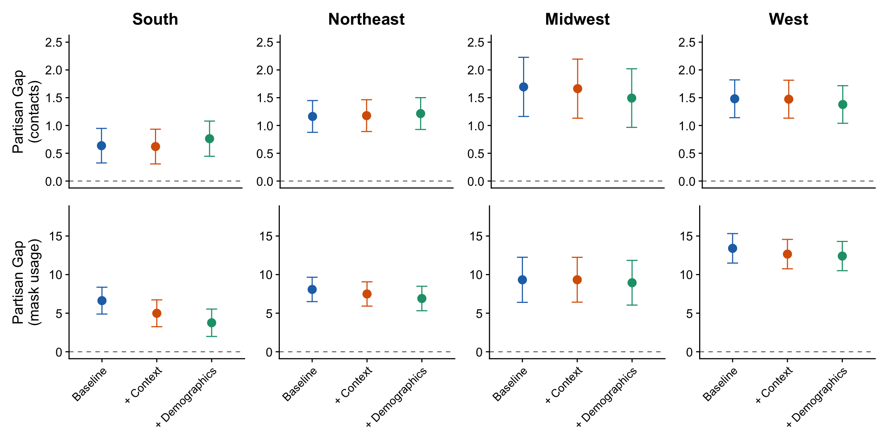
The results show that partisan gaps in both contacts and mask usage remain substantial even after controlling for local context and demographics. For contacts, the gaps are remarkably stable across specifications, suggesting that neither urban-rural differences, policy environments, nor demographic composition can explain partisan behavioral differences. For masks, gaps shrink modestly—particularly in the South—but persist in all regions even in the fully adjusted model, with gaps ranging from approximately 4 percentage points (South) to 12 percentage points (West).
6.7.1 Partisan Gaps by Congressional District Context
Figure 22 presents a complementary view of the main text analysis (Figure 23), showing the absolute Republican-Democrat gaps in contacts and mask usage by congressional district partisan context across the three model specifications.
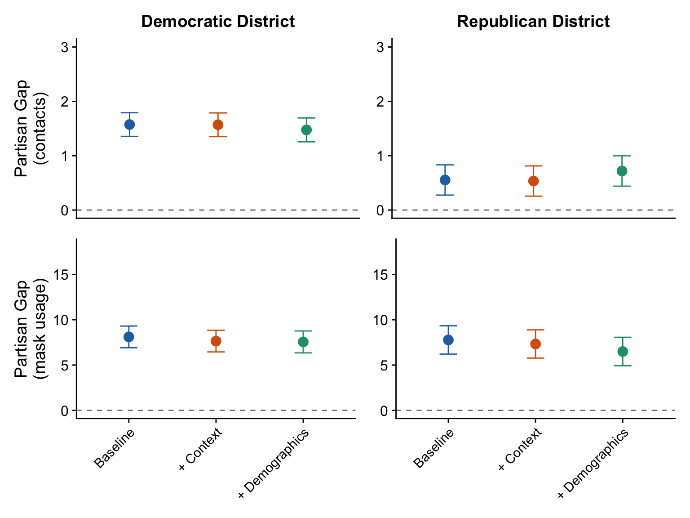
The gaps remain stable across model specifications in both district contexts. In Democratic-led districts, the contact gap ranges from 1.4-1.6 contacts across specifications; in Republican-led districts, it ranges from 0.5-0.7 contacts. For masks, gaps in Democratic districts range from 7-8 percentage points, while gaps in Republican districts range from 6-8 percentage points. These results complement the main text finding that partisan gaps persist regardless of local partisan context.
6.7.2 Robustness to Model Specification
Figure 23 displays predicted health behaviors by party and congressional district context, showing that partisan gaps persist in both Democratic-led and Republican-led districts.
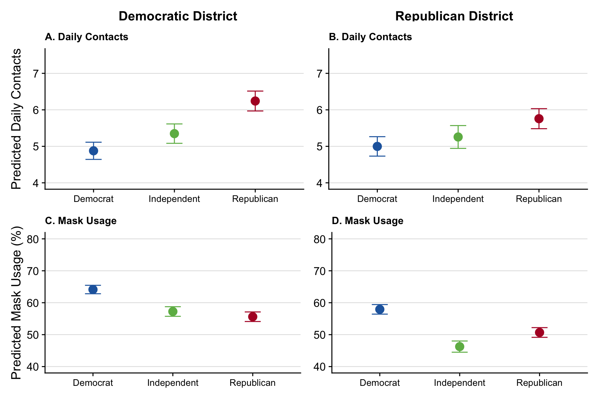
Figure 24 demonstrates that partisan gaps in health behaviors persist regardless of whether we control for local context and demographic characteristics. The figure compares unadjusted estimates (wave only) with adjusted estimates (controlling for incidence, mask mandates, metro status, and demographics).
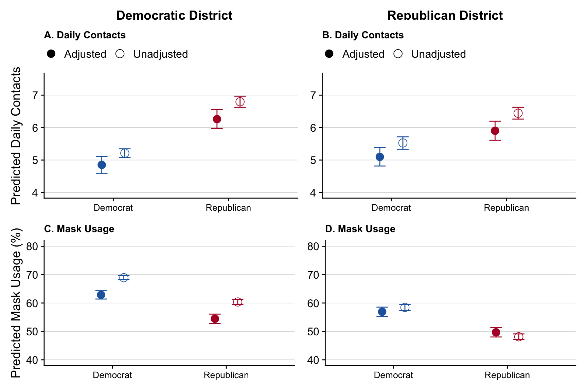
The adjustment for context and demographics has minimal impact on partisan gaps. For contacts, the Republican-Democrat gap shifts only slightly when adding controls: in Democratic districts, the gap remains approximately 1.3-1.5 contacts whether unadjusted or adjusted; in Republican districts, the gap remains approximately 0.5-0.8 contacts. For masks, the Democratic advantage over Republicans remains stable at approximately 7-10 percentage points across both district contexts and model specifications. This stability indicates that partisan differences in health behaviors are not explained by compositional differences or local contextual factors.
6.8 APPENDIX H. Weight Sensitivity Analysis
To assess the robustness of our findings to different weighting approaches, we compare results across three scenarios: (1) unweighted estimates, (2) original demographic weights that adjust for age, gender, race/ethnicity, and education, and (3) raked weights that additionally adjust for party identification to match national targets from Gallup polling (30% Democrat, 29% Republican, 39% Independent; Gallup (2021)). The raking procedure adjusts for potential correlations between party identification and demographic characteristics in our sample.
A key finding from this analysis is that raked weights and original demographic weights produce identical within-party estimates for all outcomes. This equivalence occurs because the raking procedure applies a constant multiplier to all observations within each party group. When calculating within-party means or party-specific regression coefficients, this constant multiplier cancels out. Raking only matters for population-level estimates that pool across partisan groups, where it adjusts the relative contribution of each party to the overall estimate.
We observe small differences between unweighted and weighted estimates. The Republican-Democrat contact gap is 1.33 contacts per day using unweighted data compared to 1.25 contacts per day with demographic weights—a 6% reduction. The vaccine acceptance gap is -18.6 percentage points (unweighted) versus -17.0 percentage points (weighted)—a 9% reduction in the absolute gap. Mask usage differences remain stable across all weighting scenarios, with the Republican-Democrat gap at approximately -10.8 percentage points regardless of weights used.
Importantly, all partisan differences remain highly significant (p < 0.001) across all three weighting scenarios. These results demonstrate that our findings are robust to the choice of weighting specification and that the substantive conclusions about partisan gaps in health behaviors do not depend on how we adjust for sample composition.
6.8.1 Direction of Potential Selection Bias
Beyond weighting, a distinct concern is that participation in an online panel survey may itself be correlated with partisanship in ways that bias our estimates. Clinton et al. (2022) documented that Republicans were less likely than Democrats to participate in surveys conducted during the pandemic, and that this differential nonresponse was concentrated among the least politically engaged and least health-conscious Republicans — precisely those most likely to have maintained high contact rates and low mask usage. If this pattern extends to the BICS sample, the Republicans in our data would be more compliant and health-conscious than the Republican population as a whole, meaning that the partisan gaps we estimate are likely attenuated relative to the true population differences.
The logic runs as follows. Willingness to participate in a university-administered health survey plausibly selects for civic engagement, health consciousness, and openness to public health messaging. Among Democrats, these traits are broadly aligned with partisan norms, so selection likely has modest effects on the composition of Democratic respondents. Among Republicans, however, these traits are in tension with partisan signals that framed pandemic precautions as overreach; the Republicans who opted into the survey are therefore plausibly those most willing to deviate from the strongest partisan behavioral scripts. The most disengaged Republicans — those who dismissed COVID-19 precautions most thoroughly — are the least likely to appear in our sample. This asymmetric selection would compress the observed partisan gap from the Republican side, making our estimates conservative.
This reasoning is consistent with the weight sensitivity results above: adjusting for observable demographic imbalances produces only modest changes in partisan gaps, suggesting that the respondents who did participate are reasonably representative on observable characteristics. But to the extent that unobservable characteristics (e.g., distrust of institutions, disengagement from health monitoring) are correlated with both nonparticipation and extreme behavior, the true gaps are likely larger than what we report.
6.8.2 Summary Table
| Outcome | Comparison | Unweighted | Original Weights | Raked Weights |
|---|---|---|---|---|
| Contacts | Republican - Democrat | 1.33 (0.17)*** | 1.25 (0.17)*** | 1.25 (0.17)*** |
| Contacts | Independent - Democrat | 0.28 (0.18)NA | 0.39 (0.17)* | 0.39 (0.17)* |
| Mask Usage | Republican - Democrat | -10.79 (0.90)*** | -10.78 (0.92)*** | -10.78 (0.92)*** |
| Mask Usage | Independent - Democrat | -11.72 (0.99)*** | -11.79 (1.00)*** | -11.79 (0.98)*** |
| NA | Republican - Democrat | -0.19 (0.02)*** | -0.17 (0.02)*** | -0.17 (0.02)*** |
| NA | Independent - Democrat | -0.14 (0.02)*** | -0.13 (0.02)*** | -0.13 (0.02)*** |
| Note: Estimates shown with standard errors in parentheses. Significance: * p < 0.05, ** p < 0.01, *** p < 0.001. Contacts measured as daily contacts; mask usage and vaccine acceptance measured in percentage points. |
6.8.3 Comparison of Partisan Gaps

6.9 APPENDIX I. Geographic Variation in Incidence Responsiveness
The main text presents models that pool across survey waves, using temporal variation in pandemic conditions (alongside geographic variation) to identify behavioral responses. To isolate the role of geographic variation, we estimate separate models for each survey wave. Within a single wave, variation in county-level incidence rates is purely geographic, reflecting cross-sectional differences in local pandemic severity rather than temporal trends. This approach allows us to examine whether partisan differences in responsiveness to local conditions are consistent across different periods of the pandemic.
Table 3 presents the estimated change in daily contacts associated with a 10% increase in local (log) incidence rates, by party and wave. All models include state fixed effects to control for time-invariant state characteristics. Figure 26 visualizes these results, showing how the incidence-responsiveness of each partisan group varied over the study period.
| Wave | N | Mean Inc. Rate | Democrat | Independent | Republican | R-D Gap Change |
|---|---|---|---|---|---|---|
| Apr '20 | 2355 | 131.9 | -0.043 | -0.017 | 0.117 | 0.161 |
| Jun '20 | 2180 | 51.4 | 0.249 | 0.055 | -0.007 | -0.256 |
| Sep '20 | 3040 | 59.3 | -0.369 | -0.881 | -0.975 | -0.606 |
| Dec '20 | 2837 | 284.6 | -0.105 | 0.788 | 0.079 | 0.184 |
| Feb '21 | 2827 | 283.0 | 0.156 | -0.158 | -0.118 | -0.274 |
| May '21 | 4994 | 72.4 | -0.101 | 0.275 | -0.282 | -0.181 |
| Note: Effects represent the change in daily contacts associated with a 10% increase in local log incidence rate. Negative values indicate contact reduction. R-D Gap Change shows how the Republican-Democrat contact gap changes (negative = gap narrows). All models include state fixed effects, city indicators, and interview day controls. |

6.9.1 Interpretation
The wave-by-wave analysis reveals several patterns. First, Republicans consistently show stronger contact reductions in response to local incidence than Democrats across most survey waves. In 4 of 6 waves, the Republican-Democrat gap change is negative, indicating that higher local incidence narrows the partisan contact gap. Second, the magnitude of responsiveness varies over time, with the strongest Republican responses occurring during Sep ’20 when mean incidence was 59.3 cases per 100,000.
These within-wave analyses provide complementary evidence to the pooled models in the main text. By isolating geographic variation in incidence, we demonstrate that partisan differences in responsiveness are not artifacts of differential exposure to temporal trends in the pandemic. Rather, when comparing individuals facing different local conditions at the same point in time, Republicans are more responsive to higher local incidence than Democrats—a pattern that helps explain the narrowing of partisan gaps during periods of elevated disease burden.
6.10 APPENDIX J. Partisan Behavior Levels Over Time
The main text documents how partisan gaps in health behaviors varied over the course of the pandemic. To understand what drives these fluctuations, Figure 27 displays the average behavior levels for each party across survey waves. This decomposition reveals an important asymmetry: Democrats maintained relatively stable behavior throughout the pandemic, while Republicans showed substantially greater variability.

For contact behavior (Panel A), Democrats maintained a relatively narrow range of daily contacts across all six waves, while Republicans exhibited pronounced swings—increasing contacts substantially during periods of lower case counts (September 2020) and reducing them during surges (December 2020, February 2021). The coefficient of variation for Republican contacts (25.7%) was notably higher than for Democrats (15.8%), confirming greater Republican variability.
Mask usage (Panel B) shows a different pattern. All parties increased mask-wearing from the early pandemic through winter 2020–21, but Republicans started from a lower baseline and showed steeper declines as vaccines became available in spring 2021. Democrats maintained consistently high mask usage throughout, while Republican mask-wearing tracked more closely with pandemic conditions. This asymmetry—stable Democratic behavior paired with variable Republican behavior—is the primary driver of the fluctuating partisan gaps documented in the main text.
6.10.1 Formal Test of Variance Differences
To formally test whether variance in contact behavior differs across partisan groups, we conducted Levene’s test for equality of variances on individual-level contact data. The results confirm significant heterogeneity in variance across parties (F(2, 18,230) = 15.47, p < 0.001). Republicans exhibited the highest variance in daily contacts (120.3), followed by Independents (107.9) and Democrats (83.0). Table 4 summarizes these results.
| Party | N | Mean Contacts | SD | Variance |
|---|---|---|---|---|
| Republican | 5517 | 6.87384448069602 | 10.9667090980222 | 120.268708440642 |
| Independent | 4527 | 5.82372432074218 | 10.3894697106189 | 107.941080867869 |
| Democrat | 8189 | 5.53938209793628 | 9.10909661236962 | 82.9756410934837 |
| Levene's Test | NA | NA | F = 15.47 | p < 0.001 |
| Note: Levene's test assesses equality of variances across groups. Significant result (p < 0.001) indicates variances differ significantly by party. |
The significantly higher variance among Republicans indicates that Republican contact behavior was more responsive to changing conditions—whether pandemic severity, policy environment, or media messaging—while Democrats maintained more consistent behavior throughout the study period.
6.11 APPENDIX K. Detailed Pandemic Response by Party
Figure 28 shows the standardized regression coefficients for the relationship between prior week’s pandemic conditions (incidence and mortality) and health behaviors (contacts and mask usage), by party. Effects are standardized: bars show the change associated with a one standard deviation increase in log incidence or log mortality.
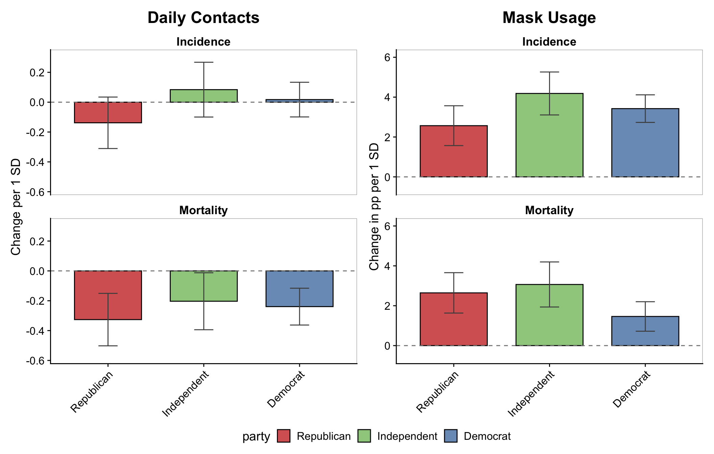
Figure 29 summarizes how partisan gaps change in response to pandemic conditions. This figure complements the individual-level effects shown above by directly displaying the implications for polarization.
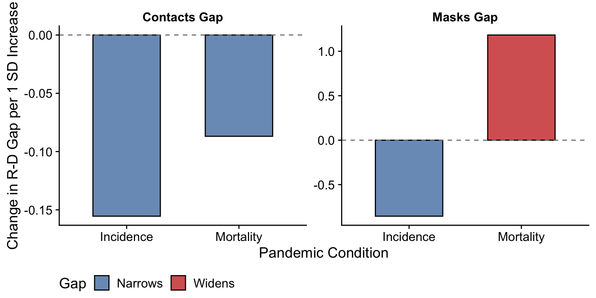
6.11.1 Incidence vs. Mortality: Why We Focus on Mortality
The main text focuses on mortality rather than incidence when discussing partisan responses to pandemic conditions. This section explains that choice and presents the full comparison of incidence and mortality effects.
Key finding: Mortality was the stronger predictor of contact behavior, while incidence was the stronger predictor of mask-wearing.
Figure 28 above displays the full comparison. For contacts (left column), mortality effects are larger than incidence effects for all partisan groups, and statistically significant for Republicans. For masks (right column), the pattern reverses: incidence effects are larger, particularly for Democrats.
This differential pattern has a plausible interpretation:
Mortality and contacts: Deaths are concrete, visible, and emotionally salient. They are reported in local news, experienced through social networks, and marked by funerals and obituaries. When deaths rise, the threat becomes tangible—prompting reductions in social contact. Republicans showed the largest mortality response, consistent with the main text’s finding that their contact behavior swung more dramatically with conditions.
Incidence and masks: Case counts, by contrast, are more abstract and mediated by testing availability and reporting. However, rising case counts may trigger mask mandates, workplace policies, and social pressure to mask—particularly in areas where cases are visibly surging. Democrats, who were more likely to live in areas with mask mandates and to follow public health guidance, showed the largest incidence response for masks.
Figure 29 summarizes the implications for polarization: mortality narrows the contact gap (Republicans reduce contacts more), while incidence slightly widens the mask gap (Democrats increase masking more). This supports the main text’s focus on mortality for the contact behavior analysis, where the key finding is that objective threat can reduce polarization—at least temporarily.
The sections below provide additional detail on mask responses to incidence (Section 6.11.2) and perception responses to both conditions (Section 6.11.3).
6.11.2 Mask Usage Response to Incidence
Figure 30 parallels ?@fig-mortality-response in the main text but shows mask usage response to incidence rather than contacts response to mortality. This figure illustrates the finding that incidence was the stronger predictor of mask-wearing, particularly for Democrats.
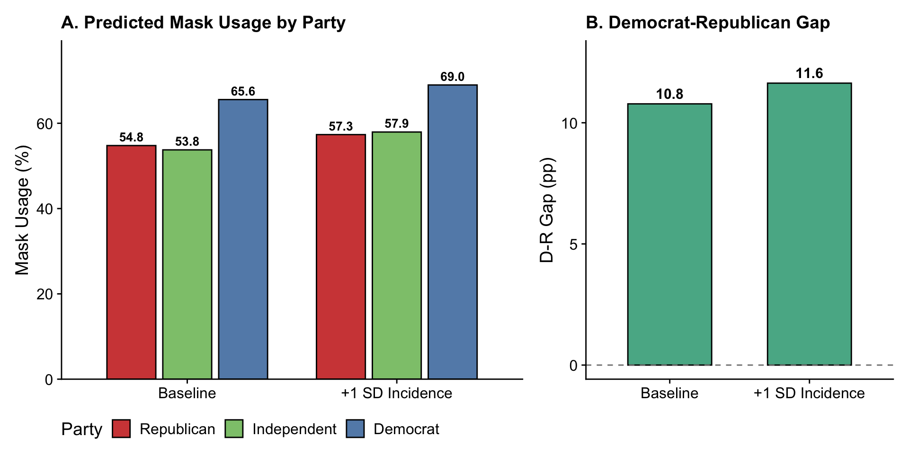
6.11.3 Perception Response to Pandemic Conditions
Figure 31 shows how COVID-19 concern (the percentage reporting being “very concerned”) responded to prior week’s pandemic conditions by party. This parallels Figure 28 but examines perceptions rather than behaviors.

Unlike health behaviors, which showed clear differential responses to pandemic conditions (mortality predicting contacts, incidence predicting masks), risk perception showed weaker and more inconsistent relationships with local pandemic conditions. This suggests that partisan differences in concern were more stable and less responsive to objective signals about pandemic severity—consistent with the finding in the main text that perception gaps remained relatively constant even as behavior gaps fluctuated.
6.12 APPENDIX L. Spatial Variation in Partisan Differences
This section provides additional detail on geographic variation in partisan differences. All estimates in this section are adjusted for survey wave and local mortality rates using regression models, removing potential confounding from differences in when surveys were collected and local pandemic severity. We present behavior levels by party within census regions (complementing the region-level gap maps in the main text), then examine finer geographic scales: census divisions (9 divisions) and states.
?@fig-region-levels-map displays adjusted health behavior levels by party and census region.
Error: object 'p_rep_contacts' not found6.12.1 Urban-Rural Behavior Levels by Party
Figure 32 displays the Republican-Democrat gap in contacts and mask-wearing by metropolitan status. The gaps are smaller in non-metropolitan areas for both behaviors: the contact gap drops from 1.3 to 0.3 additional daily contacts, and the mask gap drops from 9 to 7 percentage points. This pattern helps explain why the South—which has a higher proportion of non-metropolitan residents—showed smaller partisan gaps in the main analysis.

Figure 33 displays health behavior levels by party and metropolitan status, showing that all partisan groups were less cautious in non-metropolitan areas.
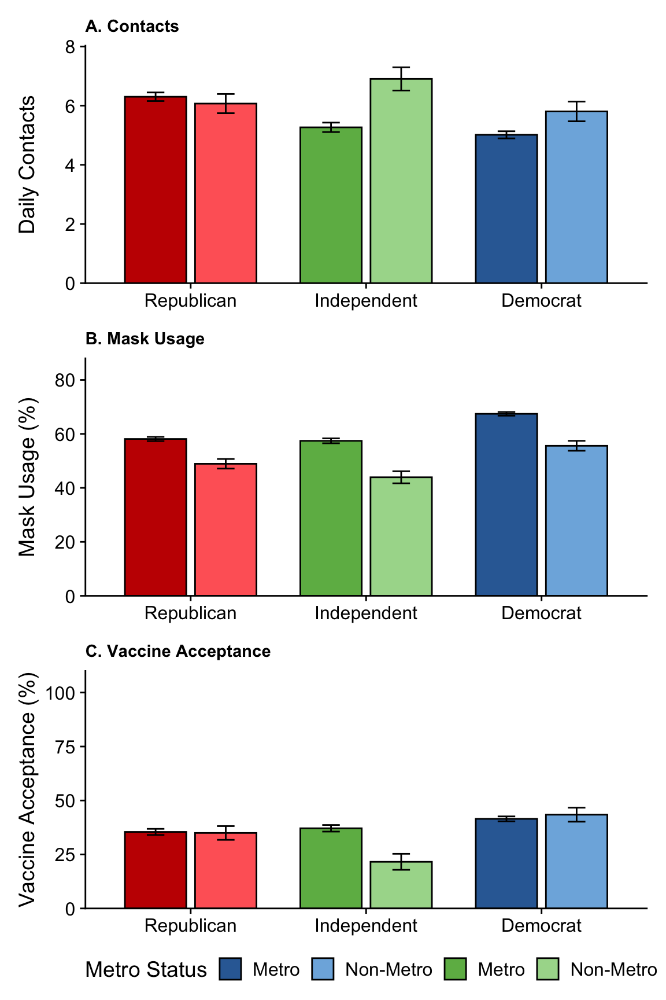
The figure reveals that the urban-rural shift toward less protective behavior is consistent across all three partisan groups. Notably, Independents show the largest urban-rural differences, particularly for mask-wearing and vaccine acceptance.
6.12.2 Partisan Gaps Within Policy Environments
A potential confounder for geographic patterns in partisan gaps is that metropolitan areas were more likely to have strict mask mandates. Figure 34 shows that partisan gaps persist within each policy environment, indicating that individual partisanship shapes behavior beyond policy effects.
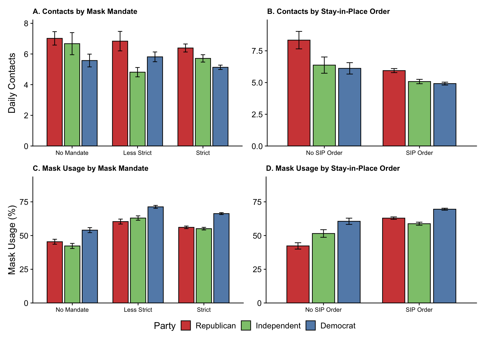
6.12.3 Behavior by Local Partisan Context
Figure 35 shows daily contacts by party and local partisan context (congressional district representation). The figure reveals that partisan gaps in contacts persist regardless of local context, though the magnitude varies.

Figure 36 shows the Republican-Democrat gap in each behavior by local partisan context. For contacts, the R-D gap is larger in Democratic-led districts than in Republican-led districts, suggesting that Republicans increase contacts more than Democrats when living in Democratic areas. For masks, the D-R gap is similar across contexts, indicating that both parties shift their mask behavior in parallel when living in opposing-party areas.
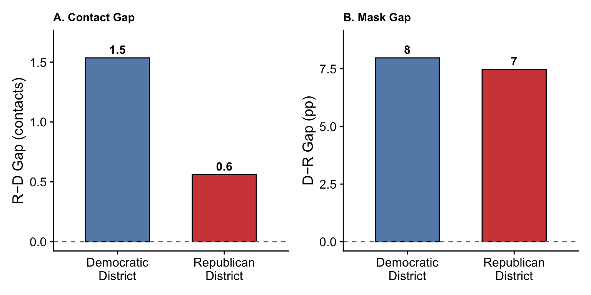
6.12.4 Regional Behavior Levels
Figure 37 displays the raw behavior levels (mean contacts and mask usage) for each party within each census region. This complements the gap-focused maps in the main text by showing the underlying distributions.

The figure reveals that the smaller partisan gaps in the South are driven primarily by Republicans in that region reporting fewer contacts and higher mask usage than Republicans elsewhere, rather than by Democrats in the South behaving differently. This suggests that regional norms may exert a moderating influence on Republican behavior specifically.
6.12.5 Regional Vaccine Acceptance and Perception Maps by Party
Figure 38 displays vaccine acceptance rates (Wave 6 only) and pandemic concern levels by party across census regions. These complement the contact and mask usage maps above.
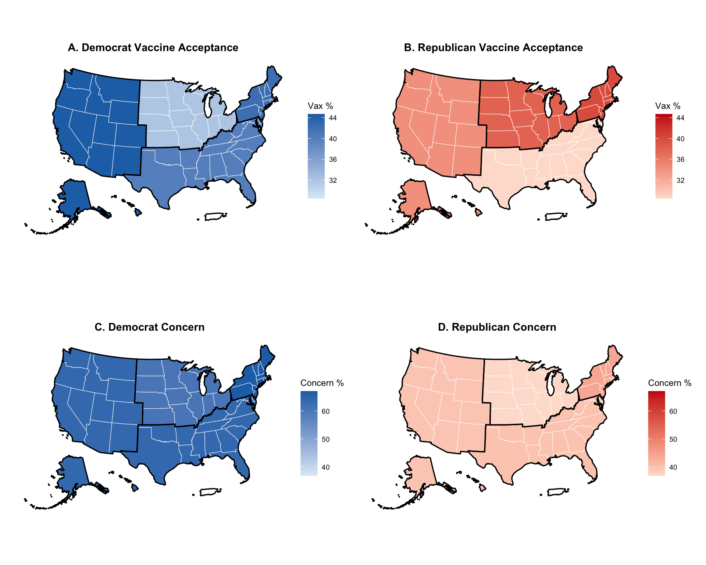
Vaccine acceptance rates show strong partisan gaps across all regions, with Democrats consistently reporting higher acceptance rates than Republicans. The gap is largest in the South and Midwest. Perception of pandemic severity (concern) shows an even starker partisan divide: Democrats report being “very concerned” about COVID-19 at rates 20-30 percentage points higher than Republicans in every region. Interestingly, while Republican concern varies less across regions, Democratic concern is highest in the Northeast and West.
6.12.6 All Partisan Gaps by Census Region
Figure 39 displays partisan gaps across all four outcomes in a single 2×2 view, facilitating comparison of geographic patterns across behaviors and perceptions.

The 2×2 view reveals that geographic patterns differ across outcomes. Contact gaps (A) and mask gaps (B) show the most regional variation, with the South having notably smaller gaps. In contrast, vaccine acceptance gaps (C) and especially concern gaps (D) are more uniform across regions, suggesting that these outcomes are more strongly driven by partisanship itself rather than regional context.
6.12.7 Partisan Gaps by Census Division
Figure 40 displays partisan gaps at the census division level (9 divisions), providing more geographic granularity than the 4 census regions. Note: The East South Central division (AL, KY, MS, TN) shows a reversed pattern with Democrats reporting more contacts and higher mask usage than Republicans. This anomaly likely reflects sampling variability given the smaller sample sizes in that division (n=166 Democrats, n=205 Republicans).
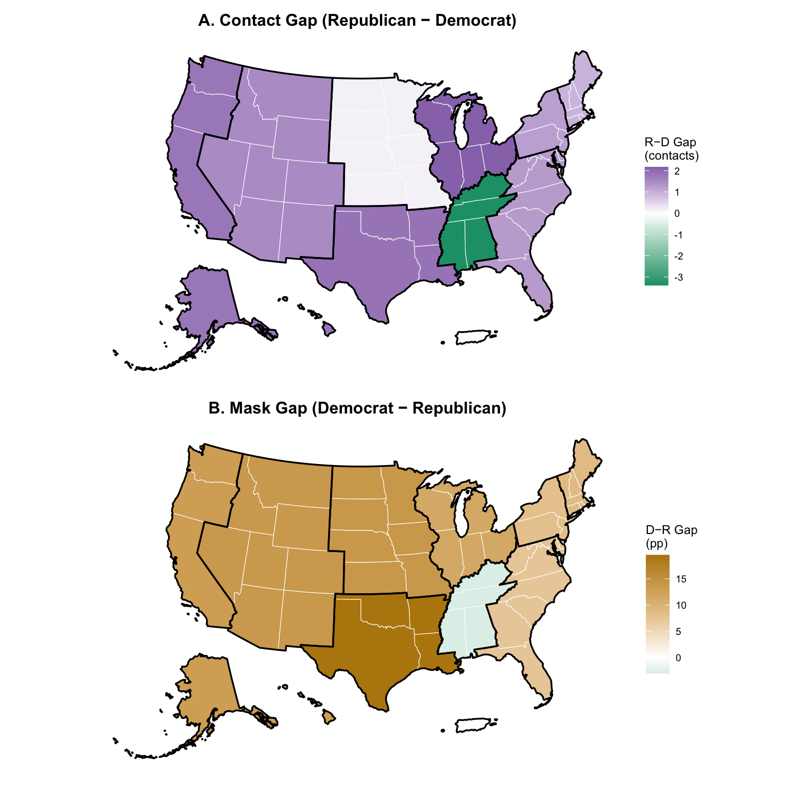
6.12.8 State-Level Partisan Gaps
Figure 41 provides a more granular view, mapping state-level partisan differences in contacts and mask usage. Important caveat: The BICS sample was designed to be nationally representative, not representative at the state level. State-level estimates should therefore be interpreted with caution, as they may reflect sampling variability rather than true geographic differences. We present these maps for exploratory purposes only; the regional and division-level analyses above provide more reliable geographic comparisons. States with fewer than 10 respondents per party are excluded.

The maps reveal substantial heterogeneity in partisan gaps across states. For contact behavior, most states show the expected pattern of Republicans reporting more contacts than Democrats (red shading), but the magnitude varies considerably—from nearly no gap in some Southern states to gaps exceeding 5 contacts per day in states like Michigan and Colorado. A few states show reversed patterns (blue shading) where Democrats report more contacts, though these often reflect small sample sizes.
For mask usage, the Democrat-Republican gap (blue shading indicates Democrats masking more) is positive in nearly all states, but again varies substantially in magnitude. Western states tend to show larger mask gaps, while some Southern states show smaller differences—consistent with the regional patterns documented in the main text.
6.13 APPENDIX M. Non-Household Contacts and Distributional Robustness
A potential concern with the total-contacts measure is that partisan differences could reflect household composition rather than discretionary social behavior—for example, if Republicans live in larger households. A related concern is that the mean contact count could be pulled by outliers in the right tail, inflating the apparent partisan gap. This appendix addresses both issues by (1) decomposing contacts into household and non-household components and (2) estimating the partisan gap using negative binomial models and quantile regressions that are robust to distributional assumptions.
Figure 42 shows the decomposition of mean daily contacts into household and non-household components by party, pooled across all survey waves. The Republican–Democrat gap in total contacts (1.29 contacts/day) is overwhelmingly driven by non-household contacts (1.21 contacts/day, or 94% of the total gap), with household contacts contributing only 0.07 contacts/day. This indicates that the partisan contact gap reflects differences in discretionary social behavior—not household composition.
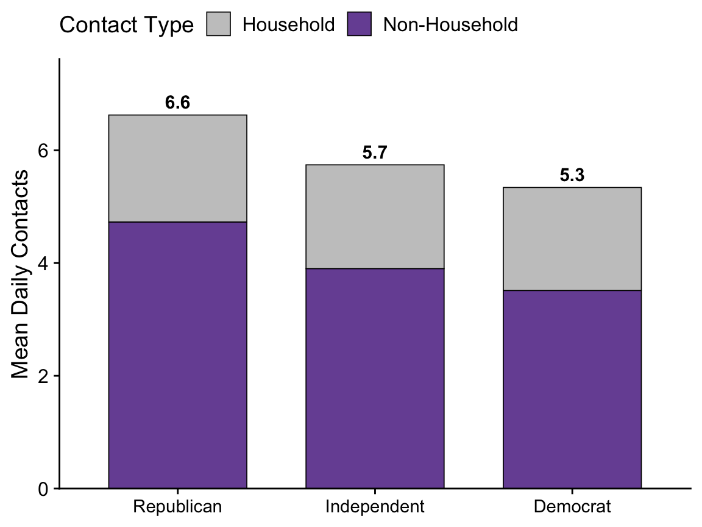
Figure 43 shows non-household contacts by party across survey waves. The partisan gap in discretionary contacts is present at every wave, generally widening during fall 2020 (wave 3) before narrowing again.
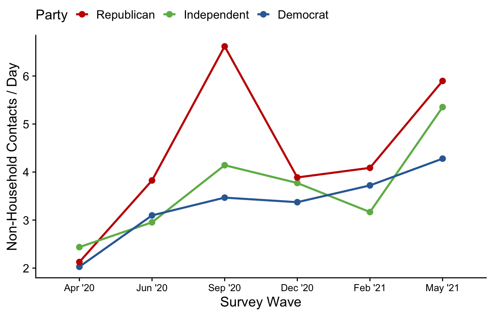
Finally, Figure 44 presents the estimated partisan gap from multiple model specifications, demonstrating that the Republican–Democrat difference is robust to distributional assumptions. The negative binomial models account for overdispersion common in count data, while quantile regressions show that the gap is not driven by extreme values in the right tail—it is present at the 25th, 50th, and 75th percentiles of the contact distribution.
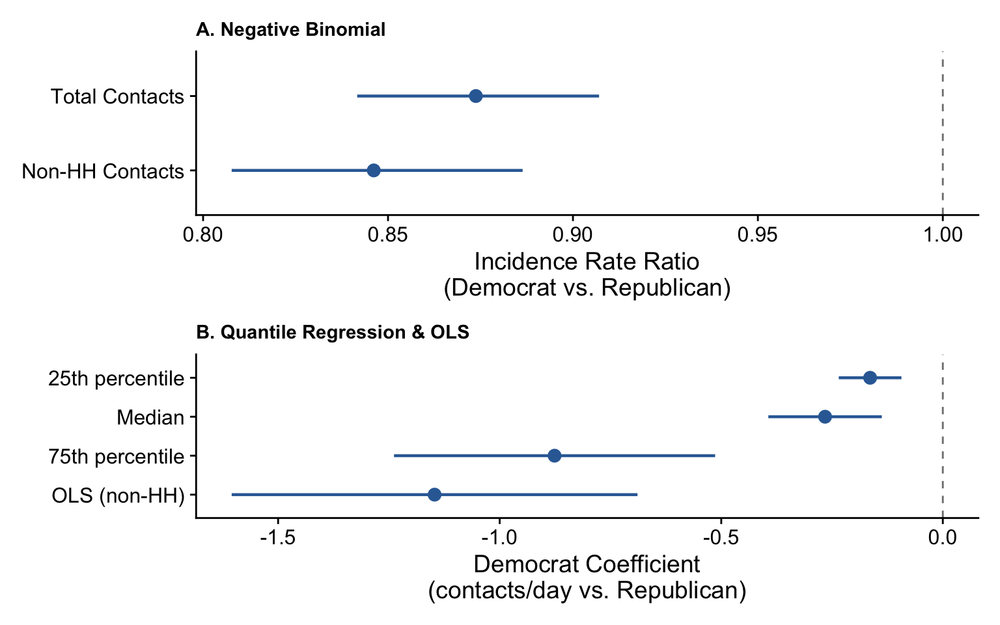
Across all specifications, Democrats report significantly fewer contacts than Republicans. The negative binomial models (Panel A) show that Democrats have a lower rate of both total and non-household contacts relative to Republicans, confirming that the gap is not an artifact of the OLS functional form. The quantile regressions (Panel B) reveal that the Democrat–Republican gap is present not only at the median but also at the 25th and 75th percentiles of the contact distribution, ruling out the possibility that the mean difference is driven by a small number of high-contact Republican outliers. The OLS estimate for non-household contacts corroborates the negative binomial finding. Together, these results demonstrate that the partisan contact gap is (a) concentrated in discretionary non-household contacts, (b) robust to modeling overdispersed count data, and (c) present across the full distribution of contacts—not merely an artifact of the mean.
6.13.1 Restricted Sample: Respondents with 2+ Non-Household Contacts
A final concern is that partisan gaps might be inflated by respondents reporting very few non-household contacts, where small absolute differences translate to large proportional differences and where mask-usage is noisier (masks are less relevant when contacts occur primarily within the household). To address this, we restrict the sample to respondents reporting 2 or more non-household contacts (N = 9,444).
Figure 45 shows non-household contacts by party over time in this restricted sample. The partisan gap remains clearly visible: Republicans report 1.43 more non-household contacts per day than Democrats on average, and the OLS coefficient for Democrat (vs. Republican) is -1.28 (p < .001) after controlling for wave, demographics, and local conditions.
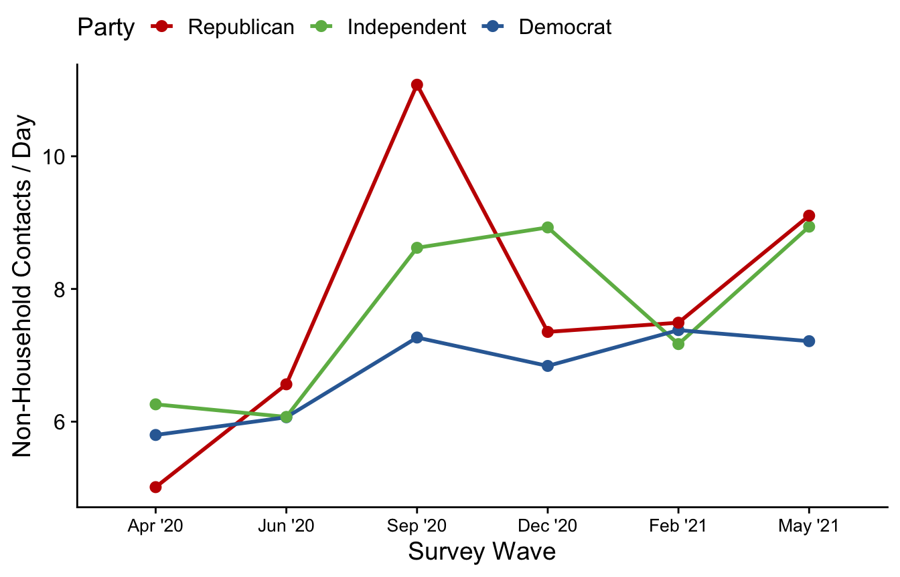
Figure 46 shows mask usage in the same restricted sample. Democrats report 11.1 percentage points higher mask usage than Republicans on average, and the OLS coefficient for Democrat (vs. Republican) is 9.0 pp (p < .001) after the same controls.
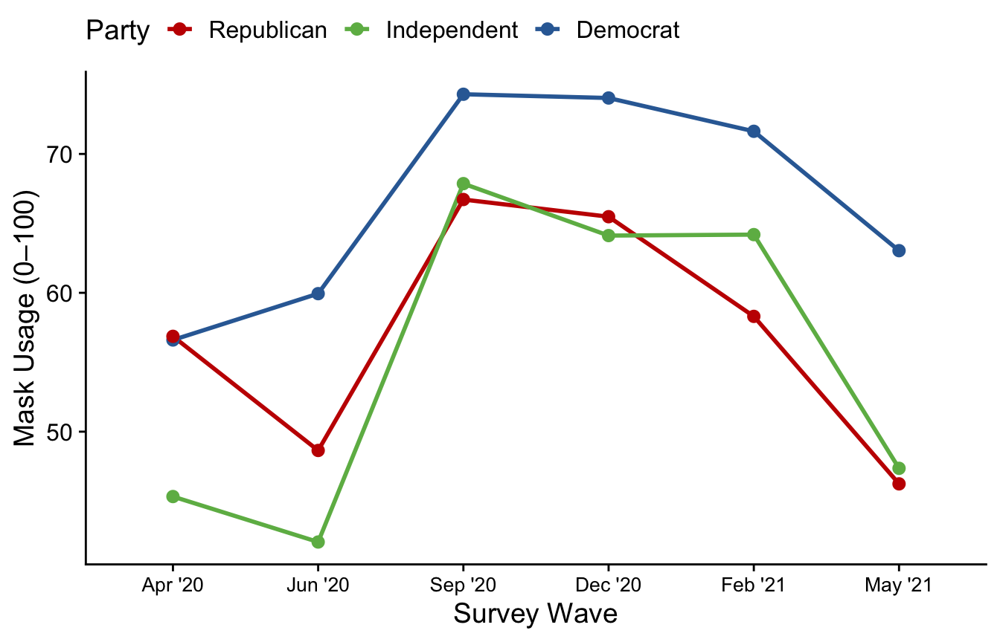
These results confirm that partisan gaps in both contact behavior and mask usage are not driven by respondents with minimal non-household contact activity. Among those with 2 or more discretionary contacts—respondents for whom both contact reduction and masking decisions are most consequential—Republicans still report more contacts and Democrats still report substantially higher mask usage.
6.14 APPENDIX N. Comprehensive Behavior Levels by Party
To complement the gap-focused analyses in the main text and preceding appendices, this section presents weighted mean behavior levels by party across all contextual breakdowns used in the paper. While partisan gaps are the primary focus of the analysis, absolute levels provide additional context for interpreting the magnitude and practical significance of those gaps.
| Context | Rep. | Ind. | Dem. | Rep. | Ind. | Dem. | N |
|---|---|---|---|---|---|---|---|
| Overall | |||||||
| Pooled | 6.63 | 5.74 | 5.34 | 55.2 | 53.9 | 65.7 | 18,233 |
| Survey Wave | |||||||
| Apr '20 | 4.10 | 4.34 | 3.74 | 54.2 | 44.2 | 60.2 | 2,355 |
| Jun '20 | 5.67 | 4.93 | 4.92 | 51.8 | 44.5 | 59.7 | 2,180 |
| Sep '20 | 8.64 | 6.04 | 5.19 | 64.7 | 66.6 | 69.7 | 3,040 |
| Dec '20 | 5.78 | 5.47 | 5.23 | 61.4 | 61.5 | 72.7 | 2,837 |
| Feb '21 | 5.95 | 4.84 | 5.64 | 57.6 | 64.5 | 72.3 | 2,827 |
| May '21 | 7.71 | 7.23 | 6.14 | 45.1 | 46.7 | 59.9 | 4,994 |
| Census Region | |||||||
| Northeast | 6.42 | 5.69 | 5.32 | 60.7 | 61.5 | 69.3 | 6,341 |
| Midwest | 6.98 | 6.11 | 5.28 | 48.1 | 42.1 | 59.8 | 1,749 |
| South | 6.66 | 6.03 | 5.80 | 52.8 | 44.9 | 61.1 | 4,979 |
| West | 6.55 | 5.32 | 4.93 | 52.6 | 57.1 | 67.2 | 5,063 |
| Metro Status | |||||||
| Metropolitan | 6.49 | 5.46 | 5.24 | 57.4 | 56.3 | 66.9 | 15,796 |
| Non-Metropolitan | 6.54 | 7.36 | 6.24 | 47.8 | 42.1 | 54.7 | 1,395 |
| Mask Mandate | |||||||
| No Mandate | 7.02 | 6.67 | 5.57 | 45.4 | 42.3 | 54.0 | 2,328 |
| Less Strict | 6.84 | 4.81 | 5.81 | 60.4 | 63.0 | 71.3 | 3,641 |
| Strict | 6.39 | 5.71 | 5.13 | 56.1 | 55.1 | 66.3 | 10,433 |
| Sample City | |||||||
| Atlanta | 7.26 | 6.18 | 5.36 | 50.1 | 42.5 | 56.9 | 1,673 |
| Bay Area | 6.64 | 5.81 | 4.89 | 58.7 | 58.0 | 71.8 | 1,654 |
| Boston | 6.21 | 6.30 | 4.89 | 56.5 | 59.2 | 67.8 | 1,655 |
| NY | 6.00 | 4.82 | 5.23 | 66.3 | 65.5 | 74.0 | 1,698 |
| National | 6.58 | 5.66 | 5.63 | 53.5 | 49.8 | 64.2 | 8,256 |
| Philadelphia | 6.44 | 5.98 | 4.94 | 56.8 | 62.1 | 65.8 | 1,700 |
| Phoenix | 6.68 | 5.09 | 5.40 | 51.8 | 55.6 | 61.2 | 1,597 |
| Opposing-Party CD | |||||||
| Opposing-party CD | 6.74 | 5.74 | 5.34 | 60.5 | 53.7 | 65.5 | 15,844 |
| Same-party CD | 6.44 | 4.60 | 5.28 | 48.1 | 67.5 | 82.5 | 2,389 |
Across both tables, Democrats consistently report fewer daily contacts and higher mask usage than Republicans in every contextual breakdown. The partisan ordering (Democrat < Independent < Republican for contacts; Democrat > Independent > Republican for masks) holds with notable consistency across survey waves, census regions, metropolitan and non-metropolitan areas, mask mandate environments, sample cities, and same- vs. opposing-party congressional districts. The absolute levels also reveal meaningful variation across contexts—for instance, contacts are higher in later waves as the pandemic progressed, and mask usage is lower in areas without mask mandates—but the partisan ranking remains stable throughout.
Table 6 presents the same weighted mean behavior levels stratified by the demographic and socioeconomic covariates included in our regression models. This complements the contextual breakdown above by showing that partisan differences persist across age groups, racial and ethnic categories, gender, education levels, employment status, household sizes, and income brackets.
| Category | Rep. | Ind. | Dem. | Rep. | Ind. | Dem. | N |
|---|---|---|---|---|---|---|---|
| Age Group | |||||||
| [18,30) | 8.13 | 6.36 | 6.19 | 51.4 | 51.1 | 61.1 | 3,689 |
| [30,45) | 8.05 | 6.92 | 6.33 | 61.6 | 54.2 | 68.3 | 6,146 |
| [45,55) | 7.35 | 5.61 | 6.77 | 57.8 | 56.7 | 71.6 | 2,998 |
| [55,65) | 6.03 | 5.81 | 4.03 | 49.2 | 53.4 | 62.6 | 2,570 |
| [65,100] | 4.03 | 3.64 | 3.01 | 50.8 | 54.0 | 62.9 | 2,830 |
| Race | |||||||
| Asian | 4.59 | 4.21 | 5.15 | 68.9 | 65.6 | 69.4 | 1,208 |
| Black | 6.41 | 5.58 | 4.88 | 61.3 | 63.2 | 67.1 | 1,976 |
| Other / Mixed | 5.38 | 5.34 | 5.24 | 52.7 | 49.2 | 66.4 | 736 |
| White | 6.72 | 5.89 | 5.49 | 54.2 | 52.4 | 64.9 | 14,313 |
| Hispanic Ethnicity | |||||||
| Hispanic | 6.60 | 6.44 | 5.77 | 56.6 | 51.0 | 65.1 | 1,960 |
| Not Hispanic | 6.59 | 5.62 | 5.24 | 54.5 | 54.2 | 65.7 | 16,273 |
| Gender | |||||||
| Female | 6.07 | 5.65 | 5.22 | 50.9 | 49.4 | 62.8 | 9,358 |
| Male | 7.09 | 5.82 | 5.49 | 58.0 | 57.9 | 68.5 | 8,875 |
| Education | |||||||
| College graduate | 6.97 | 5.82 | 5.90 | 63.1 | 58.4 | 71.1 | 9,272 |
| High school graduate | 6.02 | 5.74 | 4.85 | 51.5 | 48.8 | 60.3 | 3,101 |
| Non-high school graduate | 7.43 | 4.52 | 5.25 | 40.6 | 51.9 | 59.5 | 386 |
| Some college | 6.82 | 5.84 | 5.21 | 50.1 | 54.9 | 64.1 | 5,474 |
| Employment Status | |||||||
| Not Working | 5.16 | 3.65 | 3.58 | 50.3 | 52.3 | 61.6 | 5,541 |
| Working | 8.01 | 7.64 | 6.70 | 57.0 | 56.5 | 68.0 | 11,457 |
| Household Size | |||||||
| 1 (Lives alone) | 4.18 | 3.87 | 3.62 | 52.5 | 50.7 | 65.2 | 3,293 |
| 2 | 5.07 | 4.28 | 3.57 | 49.5 | 53.5 | 60.3 | 5,603 |
| 3 | 7.03 | 5.94 | 5.40 | 56.4 | 53.7 | 69.4 | 3,735 |
| 4+ | 9.10 | 8.25 | 8.12 | 60.4 | 55.7 | 68.4 | 5,602 |
| Household Income | |||||||
| Less than $30,000 | 5.82 | 5.14 | 4.76 | 48.9 | 53.2 | 61.8 | 2,444 |
| $30,000 to $59,999 | 6.29 | 6.14 | 4.65 | 49.2 | 52.0 | 65.2 | 4,190 |
| $60,000 to $89,999 | 6.99 | 5.72 | 5.15 | 53.9 | 58.1 | 65.5 | 2,933 |
| $90,000 to $199,999 | 7.12 | 6.72 | 6.24 | 61.3 | 56.4 | 71.3 | 4,757 |
The partisan ordering—Republicans reporting more contacts and lower mask usage than Democrats—holds across every demographic subgroup. Notably, the gap persists among both college graduates and non-college respondents, among both working and non-working individuals, and across all income brackets. Absolute levels vary meaningfully by demographics: younger respondents and those in larger households report more contacts, while college graduates and higher-income respondents report higher mask usage. Yet within every subgroup, the Republican-Democrat difference remains clearly visible.